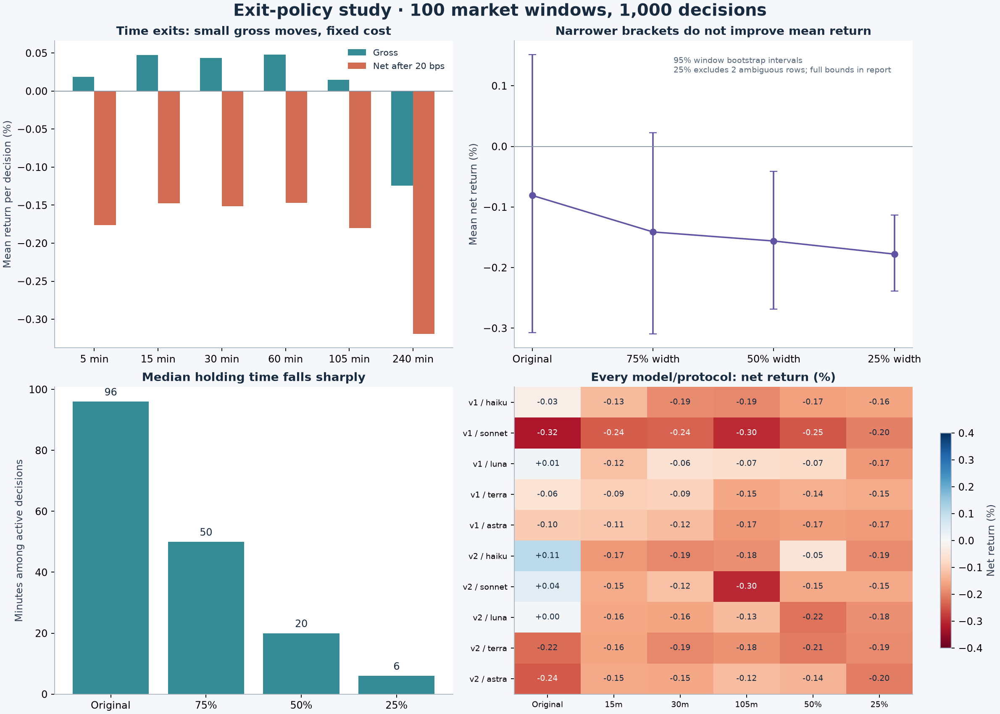

Neither modification establishes an improvement on these 100 windows. Shortening the trade reduces exposure, but the average movement captured is small relative to the unchanged 20-basis-point round-trip cost.
Detailed findings · Frozen analysis plan · All individual policy outcomes (CSV) · Audit

All return figures are percent of entry. Point estimates average decisions within each window, then average windows. Intervals resample windows, not individual AI decisions. They are pointwise exploratory intervals.
| policy | gross_mean_pct | net_mean_pct | net_ci_low | net_ci_high | ambiguous | median_minutes |
|---|---|---|---|---|---|---|
| bracket_1 | 0.1140 | -0.0810 | -0.3072 | 0.1513 | 0 | 96.0000 |
| time_15m | 0.0473 | -0.1477 | -0.2297 | -0.0673 | 0 | 15.0000 |
| time_30m | 0.0434 | -0.1516 | -0.2821 | -0.0134 | 0 | 30.0000 |
| time_105m | 0.0150 | -0.1800 | -0.4015 | 0.0496 | 0 | 105.0000 |
| bracket_0.75 | 0.0538 | -0.1412 | -0.3095 | 0.0228 | 0 | 50.0000 |
| bracket_0.5 | 0.0389 | -0.1561 | -0.2686 | -0.0410 | 0 | 20.0000 |
| bracket_0.25 | 0.0173 | -0.1777 | -0.2387 | -0.1129 | 2 | 6.0000 |
Each primary change has a negative observed difference versus the original, but all paired 95% intervals include zero. All six primary adjusted p-values are q = 0.543. This does not establish a reliable ranking between policies.
This post-hoc descriptive diagnostic divides each active trade's gross/net percent by its scaled stop distance. Ambiguous outcomes and flats are excluded. It is a unit conversion, not an executable sizing or leverage policy; no new significance tests are claimed.
| protocol | bracket_scale | known_decisions | active_decisions | ambiguous | tp_rate_known | mean_gross_r | mean_fee_r_same_known_rows | mean_net_r |
|---|---|---|---|---|---|---|---|---|
| v1 | 1.0000 | 475 | 475 | 0 | 0.4274 | 0.0820 | 0.2343 | -0.1523 |
| v1 | 0.7500 | 475 | 475 | 0 | 0.4274 | 0.0968 | 0.3124 | -0.2156 |
| v1 | 0.5000 | 475 | 475 | 0 | 0.4295 | 0.0989 | 0.4686 | -0.3697 |
| v1 | 0.2500 | 474 | 475 | 1 | 0.4283 | 0.1048 | 0.9373 | -0.8325 |
| v2 | 1.0000 | 500 | 500 | 0 | 0.3740 | 0.1220 | 0.2456 | -0.1236 |
| v2 | 0.7500 | 500 | 500 | 0 | 0.3480 | 0.0440 | 0.3274 | -0.2835 |
| v2 | 0.5000 | 500 | 500 | 0 | 0.3760 | 0.1279 | 0.4912 | -0.3633 |
| v2 | 0.2500 | 499 | 500 | 1 | 0.3587 | 0.0762 | 0.9824 | -0.9063 |
At half width, v2 gross expectancy is +0.128 R versus +0.122 R originally, essentially unchanged as an observed point estimate, while fees double from 0.246 R to 0.491 R. At quarter width gross expectancy is +0.076 R and fees 0.982 R. V1 gross expectancy remains between +0.082 and +0.105 R. The lower percentage returns partly mechanically reflect smaller risk distances; fixed fees become more burdensome in R.
These are means across active unambiguous decisions. Target-hit rates have protocol-specific denominators; v1 has variable reward/risk. Complete risk-normalization CSV includes counts and equal-window means.
Active trades at 15, 30 and 105 minutes capture an average gross move equivalent to only 4.85, 4.45 and 1.54 bps of break-even round-trip cost. The study charges 20 bps. These are descriptive thresholds, not proof of an edge under a lower fee assumption.
All 12 scale-and-time combinations remain negative net. All six reversed-direction time policies also remain negative net. An always-short 105-minute benchmark is positive at +0.063% net, but its interval is wide [−0.191%, +0.329%], and its adjusted comparison against AI is not significant.
Positive values would favor the modified policy. P-values use whole-window sign flips; BH adjustment is separate for the six primary and fifteen secondary contrasts. Temporal sensitivity resamples 92 groups of neighboring windows.
| policy | family | paired_decisions | excluded_pairs | windows | delta_net_pct | ci_low | ci_high | p | delta_all_lower_pct | delta_all_upper_pct | cluster_ci_low | cluster_ci_high | clusters | q_bh |
|---|---|---|---|---|---|---|---|---|---|---|---|---|---|---|
| bracket_0.25 | primary | 998 | 2 | 100 | -0.0979 | -0.3281 | 0.1271 | 0.4078 | -0.0966 | -0.0954 | -0.3246 | 0.1360 | 92 | 0.5426 |
| bracket_0.5 | primary | 1000 | 0 | 100 | -0.0751 | -0.2672 | 0.1136 | 0.4393 | -0.0751 | -0.0751 | -0.2671 | 0.1181 | 92 | 0.5426 |
| bracket_0.75 | primary | 1000 | 0 | 100 | -0.0602 | -0.1711 | 0.0510 | 0.2905 | -0.0602 | -0.0602 | -0.1712 | 0.0517 | 92 | 0.5426 |
| combined_0.25_105m | secondary | 998 | 2 | 100 | -0.1003 | -0.3308 | 0.1213 | 0.3972 | -0.0991 | -0.0978 | -0.3280 | 0.1273 | 92 | 0.5829 |
| combined_0.25_15m | secondary | 998 | 2 | 100 | -0.1053 | -0.3277 | 0.1245 | 0.3686 | -0.1041 | -0.1029 | -0.3304 | 0.1249 | 92 | 0.5829 |
| combined_0.25_30m | secondary | 998 | 2 | 100 | -0.1007 | -0.3262 | 0.1260 | 0.3880 | -0.0995 | -0.0982 | -0.3314 | 0.1319 | 92 | 0.5829 |
| combined_0.5_105m | secondary | 1000 | 0 | 100 | -0.0629 | -0.2496 | 0.1298 | 0.5151 | -0.0629 | -0.0629 | -0.2527 | 0.1319 | 92 | 0.5829 |
| combined_0.5_15m | secondary | 1000 | 0 | 100 | -0.0785 | -0.2928 | 0.1465 | 0.4842 | -0.0785 | -0.0785 | -0.2966 | 0.1458 | 92 | 0.5829 |
| combined_0.5_30m | secondary | 1000 | 0 | 100 | -0.0613 | -0.2694 | 0.1556 | 0.5829 | -0.0613 | -0.0613 | -0.2737 | 0.1568 | 92 | 0.5829 |
| combined_0.75_105m | secondary | 1000 | 0 | 100 | -0.0825 | -0.2300 | 0.0670 | 0.2773 | -0.0825 | -0.0825 | -0.2333 | 0.0663 | 92 | 0.5829 |
| combined_0.75_15m | secondary | 1000 | 0 | 100 | -0.0635 | -0.2793 | 0.1464 | 0.5691 | -0.0635 | -0.0635 | -0.2816 | 0.1545 | 92 | 0.5829 |
| combined_0.75_30m | secondary | 1000 | 0 | 100 | -0.0757 | -0.2799 | 0.1241 | 0.4871 | -0.0757 | -0.0757 | -0.2803 | 0.1319 | 92 | 0.5829 |
| combined_1_105m | secondary | 1000 | 0 | 100 | -0.1117 | -0.2511 | 0.0203 | 0.1091 | -0.1117 | -0.1117 | -0.2550 | 0.0208 | 92 | 0.5829 |
| combined_1_15m | secondary | 1000 | 0 | 100 | -0.0683 | -0.2863 | 0.1497 | 0.5406 | -0.0683 | -0.0683 | -0.2892 | 0.1493 | 92 | 0.5829 |
| combined_1_30m | secondary | 1000 | 0 | 100 | -0.0919 | -0.2941 | 0.1084 | 0.3836 | -0.0919 | -0.0919 | -0.2968 | 0.1121 | 92 | 0.5829 |
| time_105m | primary | 1000 | 0 | 100 | -0.0990 | -0.2820 | 0.0862 | 0.3005 | -0.0990 | -0.0990 | -0.2907 | 0.0804 | 92 | 0.5426 |
| time_15m | primary | 1000 | 0 | 100 | -0.0668 | -0.2846 | 0.1467 | 0.5426 | -0.0668 | -0.0668 | -0.2910 | 0.1534 | 92 | 0.5426 |
| time_240m | secondary | 1000 | 0 | 100 | -0.2384 | -0.5136 | 0.0234 | 0.0922 | -0.2384 | -0.2384 | -0.5117 | 0.0139 | 92 | 0.5829 |
| time_30m | primary | 1000 | 0 | 100 | -0.0707 | -0.2777 | 0.1425 | 0.5235 | -0.0707 | -0.0707 | -0.2802 | 0.1406 | 92 | 0.5426 |
| time_5m | secondary | 1000 | 0 | 100 | -0.0955 | -0.3212 | 0.1280 | 0.4155 | -0.0955 | -0.0955 | -0.3273 | 0.1446 | 92 | 0.5829 |
| time_60m | secondary | 1000 | 0 | 100 | -0.0663 | -0.2644 | 0.1434 | 0.5425 | -0.0663 | -0.0663 | -0.2626 | 0.1238 | 92 | 0.5829 |
All 506 grouped cells remain visible. Filter labels to compare versions or models. 25%-width ambiguity bounds retain all rows; exclusion-only means use a different denominator.
| group | policy | gross_mean_pct | net_mean_pct | net_ci_low | net_ci_high | net_all_lower_pct | net_all_upper_pct | active | ambiguous | median_minutes |
|---|---|---|---|---|---|---|---|---|---|---|
| pooled | bracket_1 | 0.1140 | -0.0810 | -0.3072 | 0.1513 | -0.0810 | -0.0810 | 975 | 0 | 96.0000 |
| pooled | combined_1_15m | 0.0458 | -0.1492 | -0.2369 | -0.0636 | -0.1492 | -0.1492 | 975 | 0 | 15.0000 |
| pooled | combined_1_30m | 0.0222 | -0.1728 | -0.2857 | -0.0588 | -0.1728 | -0.1728 | 975 | 0 | 30.0000 |
| pooled | combined_1_105m | 0.0024 | -0.1926 | -0.3613 | -0.0189 | -0.1926 | -0.1926 | 975 | 0 | 96.0000 |
| pooled | bracket_0.75 | 0.0538 | -0.1412 | -0.3095 | 0.0228 | -0.1412 | -0.1412 | 975 | 0 | 50.0000 |
| pooled | combined_0.75_15m | 0.0505 | -0.1445 | -0.2359 | -0.0551 | -0.1445 | -0.1445 | 975 | 0 | 15.0000 |
| pooled | combined_0.75_30m | 0.0384 | -0.1566 | -0.2707 | -0.0402 | -0.1566 | -0.1566 | 975 | 0 | 30.0000 |
| pooled | combined_0.75_105m | 0.0315 | -0.1635 | -0.3135 | -0.0142 | -0.1635 | -0.1635 | 975 | 0 | 50.0000 |
| pooled | bracket_0.5 | 0.0389 | -0.1561 | -0.2686 | -0.0410 | -0.1561 | -0.1561 | 975 | 0 | 20.0000 |
| pooled | combined_0.5_15m | 0.0355 | -0.1595 | -0.2407 | -0.0788 | -0.1595 | -0.1595 | 975 | 0 | 15.0000 |
| pooled | combined_0.5_30m | 0.0528 | -0.1422 | -0.2412 | -0.0401 | -0.1422 | -0.1422 | 975 | 0 | 20.0000 |
| pooled | combined_0.5_105m | 0.0512 | -0.1438 | -0.2527 | -0.0316 | -0.1438 | -0.1438 | 975 | 0 | 20.0000 |
| pooled | bracket_0.25 | 0.0173 | -0.1777 | -0.2387 | -0.1129 | -0.1776 | -0.1764 | 975 | 2 | 6.0000 |
| pooled | combined_0.25_15m | 0.0098 | -0.1852 | -0.2417 | -0.1262 | -0.1851 | -0.1839 | 975 | 2 | 6.0000 |
| pooled | combined_0.25_30m | 0.0145 | -0.1805 | -0.2399 | -0.1188 | -0.1804 | -0.1792 | 975 | 2 | 6.0000 |
| pooled | combined_0.25_105m | 0.0149 | -0.1801 | -0.2403 | -0.1156 | -0.1800 | -0.1788 | 975 | 2 | 6.0000 |
| pooled | time_5m | 0.0186 | -0.1764 | -0.2381 | -0.1155 | -0.1764 | -0.1764 | 975 | 0 | 5.0000 |
| pooled | reverse_5m | -0.0186 | -0.2136 | -0.2764 | -0.1493 | -0.2136 | -0.2136 | 975 | 0 | 5.0000 |
| pooled | always_short_5m | 0.0712 | -0.1238 | -0.2012 | -0.0416 | -0.1238 | -0.1238 | 975 | 0 | 5.0000 |
| pooled | ma20_5m | 0.0189 | -0.1761 | -0.2561 | -0.0957 | -0.1761 | -0.1761 | 975 | 0 | 5.0000 |
| pooled | momentum_5m | 0.0253 | -0.1677 | -0.2470 | -0.0880 | -0.1677 | -0.1677 | 965 | 0 | 5.0000 |
| pooled | time_15m | 0.0473 | -0.1477 | -0.2297 | -0.0673 | -0.1477 | -0.1477 | 975 | 0 | 15.0000 |
| pooled | reverse_15m | -0.0473 | -0.2423 | -0.3230 | -0.1599 | -0.2423 | -0.2423 | 975 | 0 | 15.0000 |
| pooled | always_short_15m | 0.1073 | -0.0877 | -0.1975 | 0.0154 | -0.0877 | -0.0877 | 975 | 0 | 15.0000 |
| pooled | ma20_15m | 0.0811 | -0.1139 | -0.2196 | -0.0064 | -0.1139 | -0.1139 | 975 | 0 | 15.0000 |
| pooled | momentum_15m | 0.0324 | -0.1606 | -0.2666 | -0.0521 | -0.1606 | -0.1606 | 965 | 0 | 15.0000 |
| pooled | time_30m | 0.0434 | -0.1516 | -0.2821 | -0.0134 | -0.1516 | -0.1516 | 975 | 0 | 30.0000 |
| pooled | reverse_30m | -0.0434 | -0.2384 | -0.3778 | -0.1104 | -0.2384 | -0.2384 | 975 | 0 | 30.0000 |
| pooled | always_short_30m | 0.1014 | -0.0936 | -0.2479 | 0.0691 | -0.0936 | -0.0936 | 975 | 0 | 30.0000 |
| pooled | ma20_30m | 0.1033 | -0.0917 | -0.2496 | 0.0753 | -0.0917 | -0.0917 | 975 | 0 | 30.0000 |
| pooled | momentum_30m | 0.0225 | -0.1705 | -0.3151 | -0.0279 | -0.1705 | -0.1705 | 965 | 0 | 30.0000 |
| pooled | time_60m | 0.0478 | -0.1472 | -0.3332 | 0.0532 | -0.1472 | -0.1472 | 975 | 0 | 60.0000 |
| pooled | reverse_60m | -0.0478 | -0.2428 | -0.4440 | -0.0577 | -0.2428 | -0.2428 | 975 | 0 | 60.0000 |
| pooled | always_short_60m | 0.1393 | -0.0557 | -0.2718 | 0.1710 | -0.0557 | -0.0557 | 975 | 0 | 60.0000 |
| pooled | ma20_60m | 0.0970 | -0.0980 | -0.3103 | 0.1320 | -0.0980 | -0.0980 | 975 | 0 | 60.0000 |
| pooled | momentum_60m | -0.0051 | -0.1981 | -0.3821 | -0.0113 | -0.1981 | -0.1981 | 965 | 0 | 60.0000 |
| pooled | time_105m | 0.0150 | -0.1800 | -0.4015 | 0.0496 | -0.1800 | -0.1800 | 975 | 0 | 105.0000 |
| pooled | reverse_105m | -0.0150 | -0.2100 | -0.4358 | 0.0158 | -0.2100 | -0.2100 | 975 | 0 | 105.0000 |
| pooled | always_short_105m | 0.2578 | 0.0628 | -0.1907 | 0.3292 | 0.0628 | 0.0628 | 975 | 0 | 105.0000 |
| pooled | ma20_105m | 0.0357 | -0.1593 | -0.4207 | 0.1063 | -0.1593 | -0.1593 | 975 | 0 | 105.0000 |
| pooled | momentum_105m | -0.0258 | -0.2188 | -0.4628 | 0.0239 | -0.2188 | -0.2188 | 965 | 0 | 105.0000 |
| pooled | time_240m | -0.1244 | -0.3194 | -0.6702 | 0.0230 | -0.3194 | -0.3194 | 975 | 0 | 240.0000 |
| pooled | reverse_240m | 0.1244 | -0.0706 | -0.4037 | 0.2847 | -0.0706 | -0.0706 | 975 | 0 | 240.0000 |
| pooled | always_short_240m | 0.1521 | -0.0429 | -0.4749 | 0.3848 | -0.0429 | -0.0429 | 975 | 0 | 240.0000 |
| pooled | ma20_240m | -0.1776 | -0.3726 | -0.8089 | 0.0403 | -0.3726 | -0.3726 | 975 | 0 | 240.0000 |
| pooled | momentum_240m | -0.1849 | -0.3779 | -0.7965 | 0.0349 | -0.3779 | -0.3779 | 965 | 0 | 240.0000 |
| v1 / claude-haiku-agent | bracket_1 | 0.1735 | -0.0265 | -0.3660 | 0.3255 | -0.0265 | -0.0265 | 100 | 0 | 123.0000 |
| v1 / claude-haiku-agent | combined_1_15m | 0.0829 | -0.1171 | -0.2343 | 0.0062 | -0.1171 | -0.1171 | 100 | 0 | 15.0000 |
| v1 / claude-haiku-agent | combined_1_30m | 0.0029 | -0.1971 | -0.3568 | -0.0358 | -0.1971 | -0.1971 | 100 | 0 | 30.0000 |
| v1 / claude-haiku-agent | combined_1_105m | 0.0445 | -0.1555 | -0.3800 | 0.0723 | -0.1555 | -0.1555 | 100 | 0 | 105.0000 |
| v1 / claude-haiku-agent | bracket_0.75 | 0.1384 | -0.0616 | -0.3196 | 0.2016 | -0.0616 | -0.0616 | 100 | 0 | 61.5000 |
| v1 / claude-haiku-agent | combined_0.75_15m | 0.0670 | -0.1330 | -0.2473 | -0.0187 | -0.1330 | -0.1330 | 100 | 0 | 15.0000 |
| v1 / claude-haiku-agent | combined_0.75_30m | 0.0147 | -0.1853 | -0.3345 | -0.0275 | -0.1853 | -0.1853 | 100 | 0 | 30.0000 |
| v1 / claude-haiku-agent | combined_0.75_105m | 0.1033 | -0.0967 | -0.3107 | 0.1194 | -0.0967 | -0.0967 | 100 | 0 | 61.5000 |
| v1 / claude-haiku-agent | bracket_0.5 | 0.0344 | -0.1656 | -0.3375 | -0.0001 | -0.1656 | -0.1656 | 100 | 0 | 26.5000 |
| v1 / claude-haiku-agent | combined_0.5_15m | 0.0570 | -0.1430 | -0.2452 | -0.0412 | -0.1430 | -0.1430 | 100 | 0 | 15.0000 |
| v1 / claude-haiku-agent | combined_0.5_30m | 0.0224 | -0.1776 | -0.3045 | -0.0486 | -0.1776 | -0.1776 | 100 | 0 | 26.5000 |
| v1 / claude-haiku-agent | combined_0.5_105m | 0.1031 | -0.0969 | -0.2475 | 0.0559 | -0.0969 | -0.0969 | 100 | 0 | 26.5000 |
| v1 / claude-haiku-agent | bracket_0.25 | 0.0419 | -0.1581 | -0.2447 | -0.0732 | -0.1581 | -0.1581 | 100 | 0 | 7.0000 |
| v1 / claude-haiku-agent | combined_0.25_15m | 0.0201 | -0.1799 | -0.2556 | -0.1064 | -0.1799 | -0.1799 | 100 | 0 | 7.0000 |
| v1 / claude-haiku-agent | combined_0.25_30m | 0.0143 | -0.1857 | -0.2669 | -0.1038 | -0.1857 | -0.1857 | 100 | 0 | 7.0000 |
| v1 / claude-haiku-agent | combined_0.25_105m | 0.0368 | -0.1632 | -0.2488 | -0.0781 | -0.1632 | -0.1632 | 100 | 0 | 7.0000 |
| v1 / claude-haiku-agent | time_5m | 0.0347 | -0.1653 | -0.2479 | -0.0780 | -0.1653 | -0.1653 | 100 | 0 | 5.0000 |
| v1 / claude-haiku-agent | reverse_5m | -0.0347 | -0.2347 | -0.3233 | -0.1566 | -0.2347 | -0.2347 | 100 | 0 | 5.0000 |
| v1 / claude-haiku-agent | always_short_5m | 0.0771 | -0.1229 | -0.2014 | -0.0339 | -0.1229 | -0.1229 | 100 | 0 | 5.0000 |
| v1 / claude-haiku-agent | ma20_5m | 0.0237 | -0.1763 | -0.2587 | -0.0902 | -0.1763 | -0.1763 | 100 | 0 | 5.0000 |
| v1 / claude-haiku-agent | momentum_5m | 0.0293 | -0.1687 | -0.2503 | -0.0811 | -0.1687 | -0.1687 | 99 | 0 | 5.0000 |
| v1 / claude-haiku-agent | time_15m | 0.0731 | -0.1269 | -0.2357 | -0.0189 | -0.1269 | -0.1269 | 100 | 0 | 15.0000 |
| v1 / claude-haiku-agent | reverse_15m | -0.0731 | -0.2731 | -0.3804 | -0.1653 | -0.2731 | -0.2731 | 100 | 0 | 15.0000 |
| v1 / claude-haiku-agent | always_short_15m | 0.1143 | -0.0857 | -0.1933 | 0.0225 | -0.0857 | -0.0857 | 100 | 0 | 15.0000 |
| v1 / claude-haiku-agent | ma20_15m | 0.0871 | -0.1129 | -0.2229 | -0.0032 | -0.1129 | -0.1129 | 100 | 0 | 15.0000 |
| v1 / claude-haiku-agent | momentum_15m | 0.0323 | -0.1657 | -0.2737 | -0.0531 | -0.1657 | -0.1657 | 99 | 0 | 15.0000 |
| v1 / claude-haiku-agent | time_30m | 0.0100 | -0.1900 | -0.3537 | -0.0182 | -0.1900 | -0.1900 | 100 | 0 | 30.0000 |
| v1 / claude-haiku-agent | reverse_30m | -0.0100 | -0.2100 | -0.3832 | -0.0481 | -0.2100 | -0.2100 | 100 | 0 | 30.0000 |
| v1 / claude-haiku-agent | always_short_30m | 0.1101 | -0.0899 | -0.2517 | 0.0783 | -0.0899 | -0.0899 | 100 | 0 | 30.0000 |
| v1 / claude-haiku-agent | ma20_30m | 0.1132 | -0.0868 | -0.2501 | 0.0829 | -0.0868 | -0.0868 | 100 | 0 | 30.0000 |
| v1 / claude-haiku-agent | momentum_30m | 0.0215 | -0.1765 | -0.3240 | -0.0280 | -0.1765 | -0.1765 | 99 | 0 | 30.0000 |
| v1 / claude-haiku-agent | time_60m | 0.0241 | -0.1759 | -0.3934 | 0.0576 | -0.1759 | -0.1759 | 100 | 0 | 60.0000 |
| v1 / claude-haiku-agent | reverse_60m | -0.0241 | -0.2241 | -0.4537 | -0.0118 | -0.2241 | -0.2241 | 100 | 0 | 60.0000 |
| v1 / claude-haiku-agent | always_short_60m | 0.1474 | -0.0526 | -0.2612 | 0.1733 | -0.0526 | -0.0526 | 100 | 0 | 60.0000 |
| v1 / claude-haiku-agent | ma20_60m | 0.1045 | -0.0955 | -0.3055 | 0.1348 | -0.0955 | -0.0955 | 100 | 0 | 60.0000 |
| v1 / claude-haiku-agent | momentum_60m | -0.0044 | -0.2024 | -0.3906 | -0.0168 | -0.2024 | -0.2024 | 99 | 0 | 60.0000 |
| v1 / claude-haiku-agent | time_105m | 0.0091 | -0.1909 | -0.4599 | 0.0780 | -0.1909 | -0.1909 | 100 | 0 | 105.0000 |
| v1 / claude-haiku-agent | reverse_105m | -0.0091 | -0.2091 | -0.4765 | 0.0593 | -0.2091 | -0.2091 | 100 | 0 | 105.0000 |
| v1 / claude-haiku-agent | always_short_105m | 0.2702 | 0.0702 | -0.1868 | 0.3421 | 0.0702 | 0.0702 | 100 | 0 | 105.0000 |
| v1 / claude-haiku-agent | ma20_105m | 0.0464 | -0.1536 | -0.4218 | 0.1180 | -0.1536 | -0.1536 | 100 | 0 | 105.0000 |
| v1 / claude-haiku-agent | momentum_105m | -0.0299 | -0.2279 | -0.4784 | 0.0274 | -0.2279 | -0.2279 | 99 | 0 | 105.0000 |
| v1 / claude-haiku-agent | time_240m | -0.0170 | -0.2170 | -0.6489 | 0.2069 | -0.2170 | -0.2170 | 100 | 0 | 240.0000 |
| v1 / claude-haiku-agent | reverse_240m | 0.0170 | -0.1830 | -0.6142 | 0.2526 | -0.1830 | -0.1830 | 100 | 0 | 240.0000 |
| v1 / claude-haiku-agent | always_short_240m | 0.1667 | -0.0333 | -0.4675 | 0.3940 | -0.0333 | -0.0333 | 100 | 0 | 240.0000 |
| v1 / claude-haiku-agent | ma20_240m | -0.1655 | -0.3655 | -0.7992 | 0.0500 | -0.3655 | -0.3655 | 100 | 0 | 240.0000 |
| v1 / claude-haiku-agent | momentum_240m | -0.1903 | -0.3883 | -0.8209 | 0.0166 | -0.3883 | -0.3883 | 99 | 0 | 240.0000 |
| v1 / claude-sonnet-agent | bracket_1 | -0.1280 | -0.3220 | -0.6215 | -0.0035 | -0.3220 | -0.3220 | 97 | 0 | 85.0000 |
| v1 / claude-sonnet-agent | combined_1_15m | -0.0608 | -0.2548 | -0.3736 | -0.1360 | -0.2548 | -0.2548 | 97 | 0 | 15.0000 |
| v1 / claude-sonnet-agent | combined_1_30m | -0.0789 | -0.2729 | -0.4242 | -0.1245 | -0.2729 | -0.2729 | 97 | 0 | 30.0000 |
| v1 / claude-sonnet-agent | combined_1_105m | -0.1163 | -0.3103 | -0.5233 | -0.0907 | -0.3103 | -0.3103 | 97 | 0 | 85.0000 |
| v1 / claude-sonnet-agent | bracket_0.75 | -0.0097 | -0.2037 | -0.4374 | 0.0406 | -0.2037 | -0.2037 | 97 | 0 | 45.0000 |
| v1 / claude-sonnet-agent | combined_0.75_15m | -0.0402 | -0.2342 | -0.3486 | -0.1195 | -0.2342 | -0.2342 | 97 | 0 | 15.0000 |
| v1 / claude-sonnet-agent | combined_0.75_30m | -0.0259 | -0.2199 | -0.3623 | -0.0698 | -0.2199 | -0.2199 | 97 | 0 | 30.0000 |
| v1 / claude-sonnet-agent | combined_0.75_105m | -0.0636 | -0.2576 | -0.4428 | -0.0684 | -0.2576 | -0.2576 | 97 | 0 | 45.0000 |
| v1 / claude-sonnet-agent | bracket_0.5 | -0.0542 | -0.2482 | -0.3993 | -0.0922 | -0.2482 | -0.2482 | 97 | 0 | 19.0000 |
| v1 / claude-sonnet-agent | combined_0.5_15m | -0.0116 | -0.2056 | -0.3010 | -0.1114 | -0.2056 | -0.2056 | 97 | 0 | 15.0000 |
| v1 / claude-sonnet-agent | combined_0.5_30m | 0.0121 | -0.1819 | -0.3056 | -0.0538 | -0.1819 | -0.1819 | 97 | 0 | 19.0000 |
| v1 / claude-sonnet-agent | combined_0.5_105m | -0.0154 | -0.2094 | -0.3590 | -0.0534 | -0.2094 | -0.2094 | 97 | 0 | 19.0000 |
| v1 / claude-sonnet-agent | bracket_0.25 | -0.0084 | -0.2024 | -0.2796 | -0.1179 | -0.2024 | -0.2024 | 97 | 0 | 6.0000 |
| v1 / claude-sonnet-agent | combined_0.25_15m | -0.0000 | -0.1940 | -0.2652 | -0.1143 | -0.1940 | -0.1940 | 97 | 0 | 6.0000 |
| v1 / claude-sonnet-agent | combined_0.25_30m | 0.0124 | -0.1816 | -0.2572 | -0.1008 | -0.1816 | -0.1816 | 97 | 0 | 6.0000 |
| v1 / claude-sonnet-agent | combined_0.25_105m | -0.0084 | -0.2024 | -0.2799 | -0.1209 | -0.2024 | -0.2024 | 97 | 0 | 6.0000 |
| v1 / claude-sonnet-agent | time_5m | -0.0295 | -0.2235 | -0.3118 | -0.1394 | -0.2235 | -0.2235 | 97 | 0 | 5.0000 |
| v1 / claude-sonnet-agent | reverse_5m | 0.0295 | -0.1645 | -0.2459 | -0.0783 | -0.1645 | -0.1645 | 97 | 0 | 5.0000 |
| v1 / claude-sonnet-agent | always_short_5m | 0.0787 | -0.1153 | -0.1945 | -0.0279 | -0.1153 | -0.1153 | 97 | 0 | 5.0000 |
| v1 / claude-sonnet-agent | ma20_5m | 0.0277 | -0.1663 | -0.2486 | -0.0779 | -0.1663 | -0.1663 | 97 | 0 | 5.0000 |
| v1 / claude-sonnet-agent | momentum_5m | 0.0276 | -0.1644 | -0.2482 | -0.0806 | -0.1644 | -0.1644 | 96 | 0 | 5.0000 |
| v1 / claude-sonnet-agent | time_15m | -0.0493 | -0.2433 | -0.3543 | -0.1324 | -0.2433 | -0.2433 | 97 | 0 | 15.0000 |
| v1 / claude-sonnet-agent | reverse_15m | 0.0493 | -0.1447 | -0.2576 | -0.0349 | -0.1447 | -0.1447 | 97 | 0 | 15.0000 |
| v1 / claude-sonnet-agent | always_short_15m | 0.1112 | -0.0828 | -0.1902 | 0.0264 | -0.0828 | -0.0828 | 97 | 0 | 15.0000 |
| v1 / claude-sonnet-agent | ma20_15m | 0.0875 | -0.1065 | -0.2160 | 0.0056 | -0.1065 | -0.1065 | 97 | 0 | 15.0000 |
| v1 / claude-sonnet-agent | momentum_15m | 0.0353 | -0.1567 | -0.2671 | -0.0460 | -0.1567 | -0.1567 | 96 | 0 | 15.0000 |
| v1 / claude-sonnet-agent | time_30m | -0.0422 | -0.2362 | -0.3997 | -0.0673 | -0.2362 | -0.2362 | 97 | 0 | 30.0000 |
| v1 / claude-sonnet-agent | reverse_30m | 0.0422 | -0.1518 | -0.3191 | 0.0140 | -0.1518 | -0.1518 | 97 | 0 | 30.0000 |
| v1 / claude-sonnet-agent | always_short_30m | 0.1017 | -0.0923 | -0.2576 | 0.0751 | -0.0923 | -0.0923 | 97 | 0 | 30.0000 |
| v1 / claude-sonnet-agent | ma20_30m | 0.1087 | -0.0853 | -0.2454 | 0.0836 | -0.0853 | -0.0853 | 97 | 0 | 30.0000 |
| v1 / claude-sonnet-agent | momentum_30m | 0.0299 | -0.1621 | -0.3141 | -0.0117 | -0.1621 | -0.1621 | 96 | 0 | 30.0000 |
| v1 / claude-sonnet-agent | time_60m | -0.0541 | -0.2481 | -0.4607 | -0.0160 | -0.2481 | -0.2481 | 97 | 0 | 60.0000 |
| v1 / claude-sonnet-agent | reverse_60m | 0.0541 | -0.1399 | -0.3688 | 0.0794 | -0.1399 | -0.1399 | 97 | 0 | 60.0000 |
| v1 / claude-sonnet-agent | always_short_60m | 0.1394 | -0.0546 | -0.2665 | 0.1736 | -0.0546 | -0.0546 | 97 | 0 | 60.0000 |
| v1 / claude-sonnet-agent | ma20_60m | 0.0968 | -0.0972 | -0.3115 | 0.1377 | -0.0972 | -0.0972 | 97 | 0 | 60.0000 |
| v1 / claude-sonnet-agent | momentum_60m | 0.0036 | -0.1884 | -0.3736 | 0.0045 | -0.1884 | -0.1884 | 96 | 0 | 60.0000 |
| v1 / claude-sonnet-agent | time_105m | -0.1054 | -0.2994 | -0.5652 | -0.0267 | -0.2994 | -0.2994 | 97 | 0 | 105.0000 |
| v1 / claude-sonnet-agent | reverse_105m | 0.1054 | -0.0886 | -0.3562 | 0.1768 | -0.0886 | -0.0886 | 97 | 0 | 105.0000 |
| v1 / claude-sonnet-agent | always_short_105m | 0.2633 | 0.0693 | -0.1912 | 0.3382 | 0.0693 | 0.0693 | 97 | 0 | 105.0000 |
| v1 / claude-sonnet-agent | ma20_105m | 0.0450 | -0.1490 | -0.4140 | 0.1277 | -0.1490 | -0.1490 | 97 | 0 | 105.0000 |
| v1 / claude-sonnet-agent | momentum_105m | -0.0230 | -0.2150 | -0.4590 | 0.0361 | -0.2150 | -0.2150 | 96 | 0 | 105.0000 |
| v1 / claude-sonnet-agent | time_240m | -0.1990 | -0.3930 | -0.8052 | 0.0301 | -0.3930 | -0.3930 | 97 | 0 | 240.0000 |
| v1 / claude-sonnet-agent | reverse_240m | 0.1990 | 0.0050 | -0.4132 | 0.4377 | 0.0050 | 0.0050 | 97 | 0 | 240.0000 |
| v1 / claude-sonnet-agent | always_short_240m | 0.1539 | -0.0401 | -0.4689 | 0.3830 | -0.0401 | -0.0401 | 97 | 0 | 240.0000 |
| v1 / claude-sonnet-agent | ma20_240m | -0.1848 | -0.3788 | -0.8148 | 0.0322 | -0.3788 | -0.3788 | 97 | 0 | 240.0000 |
| v1 / claude-sonnet-agent | momentum_240m | -0.1775 | -0.3695 | -0.7919 | 0.0477 | -0.3695 | -0.3695 | 96 | 0 | 240.0000 |
| v1 / gpt-5.6-luna-agent | bracket_1 | 0.2105 | 0.0105 | -0.2440 | 0.2714 | 0.0105 | 0.0105 | 100 | 0 | 70.0000 |
| v1 / gpt-5.6-luna-agent | combined_1_15m | 0.0897 | -0.1103 | -0.2284 | 0.0142 | -0.1103 | -0.1103 | 100 | 0 | 15.0000 |
| v1 / gpt-5.6-luna-agent | combined_1_30m | 0.1179 | -0.0821 | -0.2350 | 0.0730 | -0.0821 | -0.0821 | 100 | 0 | 30.0000 |
| v1 / gpt-5.6-luna-agent | combined_1_105m | 0.1231 | -0.0769 | -0.2885 | 0.1381 | -0.0769 | -0.0769 | 100 | 0 | 70.0000 |
| v1 / gpt-5.6-luna-agent | bracket_0.75 | 0.0633 | -0.1367 | -0.3237 | 0.0543 | -0.1367 | -0.1367 | 100 | 0 | 36.5000 |
| v1 / gpt-5.6-luna-agent | combined_0.75_15m | 0.0812 | -0.1188 | -0.2254 | -0.0086 | -0.1188 | -0.1188 | 100 | 0 | 15.0000 |
| v1 / gpt-5.6-luna-agent | combined_0.75_30m | 0.1276 | -0.0724 | -0.2111 | 0.0712 | -0.0724 | -0.0724 | 100 | 0 | 30.0000 |
| v1 / gpt-5.6-luna-agent | combined_0.75_105m | 0.0966 | -0.1034 | -0.2837 | 0.0802 | -0.1034 | -0.1034 | 100 | 0 | 36.5000 |
| v1 / gpt-5.6-luna-agent | bracket_0.5 | 0.1268 | -0.0732 | -0.2020 | 0.0568 | -0.0732 | -0.0732 | 100 | 0 | 16.5000 |
| v1 / gpt-5.6-luna-agent | combined_0.5_15m | 0.0726 | -0.1274 | -0.2195 | -0.0344 | -0.1274 | -0.1274 | 100 | 0 | 15.0000 |
| v1 / gpt-5.6-luna-agent | combined_0.5_30m | 0.1515 | -0.0485 | -0.1676 | 0.0772 | -0.0485 | -0.0485 | 100 | 0 | 16.5000 |
| v1 / gpt-5.6-luna-agent | combined_0.5_105m | 0.1328 | -0.0672 | -0.1933 | 0.0679 | -0.0672 | -0.0672 | 100 | 0 | 16.5000 |
| v1 / gpt-5.6-luna-agent | bracket_0.25 | 0.0259 | -0.1741 | -0.2380 | -0.1075 | -0.1766 | -0.1709 | 100 | 1 | 4.0000 |
| v1 / gpt-5.6-luna-agent | combined_0.25_15m | 0.0277 | -0.1723 | -0.2349 | -0.1070 | -0.1748 | -0.1690 | 100 | 1 | 4.0000 |
| v1 / gpt-5.6-luna-agent | combined_0.25_30m | 0.0294 | -0.1706 | -0.2339 | -0.1032 | -0.1731 | -0.1674 | 100 | 1 | 4.0000 |
| v1 / gpt-5.6-luna-agent | combined_0.25_105m | 0.0259 | -0.1741 | -0.2381 | -0.1074 | -0.1766 | -0.1709 | 100 | 1 | 4.0000 |
| v1 / gpt-5.6-luna-agent | time_5m | 0.0359 | -0.1641 | -0.2458 | -0.0763 | -0.1641 | -0.1641 | 100 | 0 | 5.0000 |
| v1 / gpt-5.6-luna-agent | reverse_5m | -0.0359 | -0.2359 | -0.3251 | -0.1555 | -0.2359 | -0.2359 | 100 | 0 | 5.0000 |
| v1 / gpt-5.6-luna-agent | always_short_5m | 0.0771 | -0.1229 | -0.2019 | -0.0340 | -0.1229 | -0.1229 | 100 | 0 | 5.0000 |
| v1 / gpt-5.6-luna-agent | ma20_5m | 0.0237 | -0.1763 | -0.2587 | -0.0899 | -0.1763 | -0.1763 | 100 | 0 | 5.0000 |
| v1 / gpt-5.6-luna-agent | momentum_5m | 0.0293 | -0.1687 | -0.2518 | -0.0785 | -0.1687 | -0.1687 | 99 | 0 | 5.0000 |
| v1 / gpt-5.6-luna-agent | time_15m | 0.0815 | -0.1185 | -0.2301 | -0.0082 | -0.1185 | -0.1185 | 100 | 0 | 15.0000 |
| v1 / gpt-5.6-luna-agent | reverse_15m | -0.0815 | -0.2815 | -0.3924 | -0.1748 | -0.2815 | -0.2815 | 100 | 0 | 15.0000 |
| v1 / gpt-5.6-luna-agent | always_short_15m | 0.1143 | -0.0857 | -0.1944 | 0.0195 | -0.0857 | -0.0857 | 100 | 0 | 15.0000 |
| v1 / gpt-5.6-luna-agent | ma20_15m | 0.0871 | -0.1129 | -0.2209 | -0.0025 | -0.1129 | -0.1129 | 100 | 0 | 15.0000 |
| v1 / gpt-5.6-luna-agent | momentum_15m | 0.0323 | -0.1657 | -0.2760 | -0.0553 | -0.1657 | -0.1657 | 99 | 0 | 15.0000 |
| v1 / gpt-5.6-luna-agent | time_30m | 0.1404 | -0.0596 | -0.2225 | 0.1075 | -0.0596 | -0.0596 | 100 | 0 | 30.0000 |
| v1 / gpt-5.6-luna-agent | reverse_30m | -0.1404 | -0.3404 | -0.5073 | -0.1776 | -0.3404 | -0.3404 | 100 | 0 | 30.0000 |
| v1 / gpt-5.6-luna-agent | always_short_30m | 0.1101 | -0.0899 | -0.2501 | 0.0760 | -0.0899 | -0.0899 | 100 | 0 | 30.0000 |
| v1 / gpt-5.6-luna-agent | ma20_30m | 0.1132 | -0.0868 | -0.2524 | 0.0844 | -0.0868 | -0.0868 | 100 | 0 | 30.0000 |
| v1 / gpt-5.6-luna-agent | momentum_30m | 0.0215 | -0.1765 | -0.3269 | -0.0236 | -0.1765 | -0.1765 | 99 | 0 | 30.0000 |
| v1 / gpt-5.6-luna-agent | time_60m | 0.1250 | -0.0750 | -0.2888 | 0.1515 | -0.0750 | -0.0750 | 100 | 0 | 60.0000 |
| v1 / gpt-5.6-luna-agent | reverse_60m | -0.1250 | -0.3250 | -0.5568 | -0.1098 | -0.3250 | -0.3250 | 100 | 0 | 60.0000 |
| v1 / gpt-5.6-luna-agent | always_short_60m | 0.1474 | -0.0526 | -0.2691 | 0.1763 | -0.0526 | -0.0526 | 100 | 0 | 60.0000 |
| v1 / gpt-5.6-luna-agent | ma20_60m | 0.1045 | -0.0955 | -0.3074 | 0.1460 | -0.0955 | -0.0955 | 100 | 0 | 60.0000 |
| v1 / gpt-5.6-luna-agent | momentum_60m | -0.0044 | -0.2024 | -0.3918 | -0.0119 | -0.2024 | -0.2024 | 99 | 0 | 60.0000 |
| v1 / gpt-5.6-luna-agent | time_105m | 0.1303 | -0.0697 | -0.3332 | 0.1977 | -0.0697 | -0.0697 | 100 | 0 | 105.0000 |
| v1 / gpt-5.6-luna-agent | reverse_105m | -0.1303 | -0.3303 | -0.5953 | -0.0632 | -0.3303 | -0.3303 | 100 | 0 | 105.0000 |
| v1 / gpt-5.6-luna-agent | always_short_105m | 0.2702 | 0.0702 | -0.1884 | 0.3366 | 0.0702 | 0.0702 | 100 | 0 | 105.0000 |
| v1 / gpt-5.6-luna-agent | ma20_105m | 0.0464 | -0.1536 | -0.4219 | 0.1166 | -0.1536 | -0.1536 | 100 | 0 | 105.0000 |
| v1 / gpt-5.6-luna-agent | momentum_105m | -0.0299 | -0.2279 | -0.4734 | 0.0185 | -0.2279 | -0.2279 | 99 | 0 | 105.0000 |
| v1 / gpt-5.6-luna-agent | time_240m | 0.0719 | -0.1281 | -0.5618 | 0.2918 | -0.1281 | -0.1281 | 100 | 0 | 240.0000 |
| v1 / gpt-5.6-luna-agent | reverse_240m | -0.0719 | -0.2719 | -0.6849 | 0.1602 | -0.2719 | -0.2719 | 100 | 0 | 240.0000 |
| v1 / gpt-5.6-luna-agent | always_short_240m | 0.1667 | -0.0333 | -0.4680 | 0.3774 | -0.0333 | -0.0333 | 100 | 0 | 240.0000 |
| v1 / gpt-5.6-luna-agent | ma20_240m | -0.1655 | -0.3655 | -0.8045 | 0.0435 | -0.3655 | -0.3655 | 100 | 0 | 240.0000 |
| v1 / gpt-5.6-luna-agent | momentum_240m | -0.1903 | -0.3883 | -0.8243 | 0.0261 | -0.3883 | -0.3883 | 99 | 0 | 240.0000 |
| v1 / gpt-5.6-terra-agent | bracket_1 | 0.1162 | -0.0558 | -0.3073 | 0.2087 | -0.0558 | -0.0558 | 86 | 0 | 82.5000 |
| v1 / gpt-5.6-terra-agent | combined_1_15m | 0.0714 | -0.1006 | -0.2028 | 0.0008 | -0.1006 | -0.1006 | 86 | 0 | 15.0000 |
| v1 / gpt-5.6-terra-agent | combined_1_30m | 0.0587 | -0.1133 | -0.2486 | 0.0268 | -0.1133 | -0.1133 | 86 | 0 | 30.0000 |
| v1 / gpt-5.6-terra-agent | combined_1_105m | 0.0676 | -0.1044 | -0.2940 | 0.0813 | -0.1044 | -0.1044 | 86 | 0 | 82.5000 |
| v1 / gpt-5.6-terra-agent | bracket_0.75 | 0.0808 | -0.0912 | -0.2867 | 0.1100 | -0.0912 | -0.0912 | 86 | 0 | 45.0000 |
| v1 / gpt-5.6-terra-agent | combined_0.75_15m | 0.0731 | -0.0989 | -0.1941 | -0.0034 | -0.0989 | -0.0989 | 86 | 0 | 15.0000 |
| v1 / gpt-5.6-terra-agent | combined_0.75_30m | 0.0866 | -0.0854 | -0.2161 | 0.0469 | -0.0854 | -0.0854 | 86 | 0 | 30.0000 |
| v1 / gpt-5.6-terra-agent | combined_0.75_105m | 0.0521 | -0.1199 | -0.2844 | 0.0464 | -0.1199 | -0.1199 | 86 | 0 | 45.0000 |
| v1 / gpt-5.6-terra-agent | bracket_0.5 | 0.0303 | -0.1417 | -0.2682 | -0.0056 | -0.1417 | -0.1417 | 86 | 0 | 19.5000 |
| v1 / gpt-5.6-terra-agent | combined_0.5_15m | 0.0378 | -0.1342 | -0.2240 | -0.0461 | -0.1342 | -0.1342 | 86 | 0 | 15.0000 |
| v1 / gpt-5.6-terra-agent | combined_0.5_30m | 0.0732 | -0.0988 | -0.2189 | 0.0256 | -0.0988 | -0.0988 | 86 | 0 | 19.5000 |
| v1 / gpt-5.6-terra-agent | combined_0.5_105m | 0.0367 | -0.1353 | -0.2640 | -0.0016 | -0.1353 | -0.1353 | 86 | 0 | 19.5000 |
| v1 / gpt-5.6-terra-agent | bracket_0.25 | 0.0234 | -0.1486 | -0.2131 | -0.0821 | -0.1486 | -0.1486 | 86 | 0 | 4.5000 |
| v1 / gpt-5.6-terra-agent | combined_0.25_15m | 0.0244 | -0.1476 | -0.2108 | -0.0835 | -0.1476 | -0.1476 | 86 | 0 | 4.5000 |
| v1 / gpt-5.6-terra-agent | combined_0.25_30m | 0.0272 | -0.1448 | -0.2092 | -0.0788 | -0.1448 | -0.1448 | 86 | 0 | 4.5000 |
| v1 / gpt-5.6-terra-agent | combined_0.25_105m | 0.0234 | -0.1486 | -0.2124 | -0.0816 | -0.1486 | -0.1486 | 86 | 0 | 4.5000 |
| v1 / gpt-5.6-terra-agent | time_5m | 0.0160 | -0.1560 | -0.2283 | -0.0899 | -0.1560 | -0.1560 | 86 | 0 | 5.0000 |
| v1 / gpt-5.6-terra-agent | reverse_5m | -0.0160 | -0.1880 | -0.2592 | -0.1200 | -0.1880 | -0.1880 | 86 | 0 | 5.0000 |
| v1 / gpt-5.6-terra-agent | always_short_5m | 0.0448 | -0.1272 | -0.1940 | -0.0588 | -0.1272 | -0.1272 | 86 | 0 | 5.0000 |
| v1 / gpt-5.6-terra-agent | ma20_5m | -0.0023 | -0.1743 | -0.2458 | -0.1075 | -0.1743 | -0.1743 | 86 | 0 | 5.0000 |
| v1 / gpt-5.6-terra-agent | momentum_5m | 0.0105 | -0.1595 | -0.2314 | -0.0923 | -0.1595 | -0.1595 | 85 | 0 | 5.0000 |
| v1 / gpt-5.6-terra-agent | time_15m | 0.0776 | -0.0944 | -0.1924 | 0.0041 | -0.0944 | -0.0944 | 86 | 0 | 15.0000 |
| v1 / gpt-5.6-terra-agent | reverse_15m | -0.0776 | -0.2496 | -0.3512 | -0.1496 | -0.2496 | -0.2496 | 86 | 0 | 15.0000 |
| v1 / gpt-5.6-terra-agent | always_short_15m | 0.0780 | -0.0940 | -0.1943 | 0.0051 | -0.0940 | -0.0940 | 86 | 0 | 15.0000 |
| v1 / gpt-5.6-terra-agent | ma20_15m | 0.0585 | -0.1135 | -0.2131 | -0.0143 | -0.1135 | -0.1135 | 86 | 0 | 15.0000 |
| v1 / gpt-5.6-terra-agent | momentum_15m | 0.0373 | -0.1327 | -0.2338 | -0.0319 | -0.1327 | -0.1327 | 85 | 0 | 15.0000 |
| v1 / gpt-5.6-terra-agent | time_30m | 0.0795 | -0.0925 | -0.2428 | 0.0641 | -0.0925 | -0.0925 | 86 | 0 | 30.0000 |
| v1 / gpt-5.6-terra-agent | reverse_30m | -0.0795 | -0.2515 | -0.4112 | -0.1017 | -0.2515 | -0.2515 | 86 | 0 | 30.0000 |
| v1 / gpt-5.6-terra-agent | always_short_30m | 0.0712 | -0.1008 | -0.2487 | 0.0555 | -0.1008 | -0.1008 | 86 | 0 | 30.0000 |
| v1 / gpt-5.6-terra-agent | ma20_30m | 0.0582 | -0.1138 | -0.2643 | 0.0413 | -0.1138 | -0.1138 | 86 | 0 | 30.0000 |
| v1 / gpt-5.6-terra-agent | momentum_30m | 0.0333 | -0.1367 | -0.2704 | -0.0048 | -0.1367 | -0.1367 | 85 | 0 | 30.0000 |
| v1 / gpt-5.6-terra-agent | time_60m | 0.0468 | -0.1252 | -0.3309 | 0.1002 | -0.1252 | -0.1252 | 86 | 0 | 60.0000 |
| v1 / gpt-5.6-terra-agent | reverse_60m | -0.0468 | -0.2188 | -0.4431 | -0.0100 | -0.2188 | -0.2188 | 86 | 0 | 60.0000 |
| v1 / gpt-5.6-terra-agent | always_short_60m | 0.1051 | -0.0669 | -0.2710 | 0.1503 | -0.0669 | -0.0669 | 86 | 0 | 60.0000 |
| v1 / gpt-5.6-terra-agent | ma20_60m | 0.0682 | -0.1038 | -0.3076 | 0.1198 | -0.1038 | -0.1038 | 86 | 0 | 60.0000 |
| v1 / gpt-5.6-terra-agent | momentum_60m | -0.0023 | -0.1723 | -0.3548 | 0.0078 | -0.1723 | -0.1723 | 85 | 0 | 60.0000 |
| v1 / gpt-5.6-terra-agent | time_105m | 0.0182 | -0.1538 | -0.4051 | 0.1047 | -0.1538 | -0.1538 | 86 | 0 | 105.0000 |
| v1 / gpt-5.6-terra-agent | reverse_105m | -0.0182 | -0.1902 | -0.4409 | 0.0570 | -0.1902 | -0.1902 | 86 | 0 | 105.0000 |
| v1 / gpt-5.6-terra-agent | always_short_105m | 0.2042 | 0.0322 | -0.2082 | 0.2875 | 0.0322 | 0.0322 | 86 | 0 | 105.0000 |
| v1 / gpt-5.6-terra-agent | ma20_105m | -0.0179 | -0.1899 | -0.4457 | 0.0633 | -0.1899 | -0.1899 | 86 | 0 | 105.0000 |
| v1 / gpt-5.6-terra-agent | momentum_105m | -0.0009 | -0.1709 | -0.4001 | 0.0591 | -0.1709 | -0.1709 | 85 | 0 | 105.0000 |
| v1 / gpt-5.6-terra-agent | time_240m | -0.0773 | -0.2493 | -0.6885 | 0.1652 | -0.2493 | -0.2493 | 86 | 0 | 240.0000 |
| v1 / gpt-5.6-terra-agent | reverse_240m | 0.0773 | -0.0947 | -0.5214 | 0.3310 | -0.0947 | -0.0947 | 86 | 0 | 240.0000 |
| v1 / gpt-5.6-terra-agent | always_short_240m | 0.1022 | -0.0698 | -0.4847 | 0.3401 | -0.0698 | -0.0698 | 86 | 0 | 240.0000 |
| v1 / gpt-5.6-terra-agent | ma20_240m | -0.2197 | -0.3917 | -0.8243 | 0.0194 | -0.3917 | -0.3917 | 86 | 0 | 240.0000 |
| v1 / gpt-5.6-terra-agent | momentum_240m | -0.1755 | -0.3455 | -0.7795 | 0.0554 | -0.3455 | -0.3455 | 85 | 0 | 240.0000 |
| v1 / gpt-6-astra-agent | bracket_1 | 0.0814 | -0.1026 | -0.4214 | 0.2213 | -0.1026 | -0.1026 | 92 | 0 | 118.0000 |
| v1 / gpt-6-astra-agent | combined_1_15m | 0.0772 | -0.1068 | -0.2087 | -0.0039 | -0.1068 | -0.1068 | 92 | 0 | 15.0000 |
| v1 / gpt-6-astra-agent | combined_1_30m | 0.0415 | -0.1425 | -0.2810 | 0.0007 | -0.1425 | -0.1425 | 92 | 0 | 30.0000 |
| v1 / gpt-6-astra-agent | combined_1_105m | -0.0213 | -0.2053 | -0.4157 | 0.0136 | -0.2053 | -0.2053 | 92 | 0 | 105.0000 |
| v1 / gpt-6-astra-agent | bracket_0.75 | 0.0963 | -0.0877 | -0.3296 | 0.1508 | -0.0877 | -0.0877 | 92 | 0 | 52.5000 |
| v1 / gpt-6-astra-agent | combined_0.75_15m | 0.0615 | -0.1225 | -0.2250 | -0.0204 | -0.1225 | -0.1225 | 92 | 0 | 15.0000 |
| v1 / gpt-6-astra-agent | combined_0.75_30m | 0.0461 | -0.1379 | -0.2751 | 0.0041 | -0.1379 | -0.1379 | 92 | 0 | 30.0000 |
| v1 / gpt-6-astra-agent | combined_0.75_105m | 0.0330 | -0.1510 | -0.3524 | 0.0470 | -0.1510 | -0.1510 | 92 | 0 | 52.5000 |
| v1 / gpt-6-astra-agent | bracket_0.5 | 0.0153 | -0.1687 | -0.3296 | -0.0048 | -0.1687 | -0.1687 | 92 | 0 | 24.0000 |
| v1 / gpt-6-astra-agent | combined_0.5_15m | 0.0382 | -0.1458 | -0.2418 | -0.0496 | -0.1458 | -0.1458 | 92 | 0 | 15.0000 |
| v1 / gpt-6-astra-agent | combined_0.5_30m | 0.0465 | -0.1375 | -0.2634 | -0.0077 | -0.1375 | -0.1375 | 92 | 0 | 24.0000 |
| v1 / gpt-6-astra-agent | combined_0.5_105m | 0.0380 | -0.1460 | -0.2991 | 0.0153 | -0.1460 | -0.1460 | 92 | 0 | 24.0000 |
| v1 / gpt-6-astra-agent | bracket_0.25 | 0.0122 | -0.1718 | -0.2528 | -0.0882 | -0.1718 | -0.1718 | 92 | 0 | 6.0000 |
| v1 / gpt-6-astra-agent | combined_0.25_15m | -0.0017 | -0.1857 | -0.2616 | -0.1081 | -0.1857 | -0.1857 | 92 | 0 | 6.0000 |
| v1 / gpt-6-astra-agent | combined_0.25_30m | 0.0026 | -0.1814 | -0.2581 | -0.1030 | -0.1814 | -0.1814 | 92 | 0 | 6.0000 |
| v1 / gpt-6-astra-agent | combined_0.25_105m | 0.0122 | -0.1718 | -0.2525 | -0.0872 | -0.1718 | -0.1718 | 92 | 0 | 6.0000 |
| v1 / gpt-6-astra-agent | time_5m | 0.0204 | -0.1636 | -0.2337 | -0.0945 | -0.1636 | -0.1636 | 92 | 0 | 5.0000 |
| v1 / gpt-6-astra-agent | reverse_5m | -0.0204 | -0.2044 | -0.2762 | -0.1345 | -0.2044 | -0.2044 | 92 | 0 | 5.0000 |
| v1 / gpt-6-astra-agent | always_short_5m | 0.0485 | -0.1355 | -0.2017 | -0.0653 | -0.1355 | -0.1355 | 92 | 0 | 5.0000 |
| v1 / gpt-6-astra-agent | ma20_5m | -0.0021 | -0.1861 | -0.2567 | -0.1157 | -0.1861 | -0.1861 | 92 | 0 | 5.0000 |
| v1 / gpt-6-astra-agent | momentum_5m | 0.0096 | -0.1724 | -0.2428 | -0.1037 | -0.1724 | -0.1724 | 91 | 0 | 5.0000 |
| v1 / gpt-6-astra-agent | time_15m | 0.0764 | -0.1076 | -0.2064 | -0.0045 | -0.1076 | -0.1076 | 92 | 0 | 15.0000 |
| v1 / gpt-6-astra-agent | reverse_15m | -0.0764 | -0.2604 | -0.3633 | -0.1587 | -0.2604 | -0.2604 | 92 | 0 | 15.0000 |
| v1 / gpt-6-astra-agent | always_short_15m | 0.0841 | -0.0999 | -0.2036 | 0.0021 | -0.0999 | -0.0999 | 92 | 0 | 15.0000 |
| v1 / gpt-6-astra-agent | ma20_15m | 0.0551 | -0.1289 | -0.2292 | -0.0265 | -0.1289 | -0.1289 | 92 | 0 | 15.0000 |
| v1 / gpt-6-astra-agent | momentum_15m | 0.0253 | -0.1567 | -0.2600 | -0.0536 | -0.1567 | -0.1567 | 91 | 0 | 15.0000 |
| v1 / gpt-6-astra-agent | time_30m | 0.0591 | -0.1249 | -0.2744 | 0.0374 | -0.1249 | -0.1249 | 92 | 0 | 30.0000 |
| v1 / gpt-6-astra-agent | reverse_30m | -0.0591 | -0.2431 | -0.4092 | -0.0919 | -0.2431 | -0.2431 | 92 | 0 | 30.0000 |
| v1 / gpt-6-astra-agent | always_short_30m | 0.0707 | -0.1133 | -0.2705 | 0.0447 | -0.1133 | -0.1133 | 92 | 0 | 30.0000 |
| v1 / gpt-6-astra-agent | ma20_30m | 0.0732 | -0.1108 | -0.2619 | 0.0471 | -0.1108 | -0.1108 | 92 | 0 | 30.0000 |
| v1 / gpt-6-astra-agent | momentum_30m | 0.0110 | -0.1710 | -0.3066 | -0.0332 | -0.1710 | -0.1710 | 91 | 0 | 30.0000 |
| v1 / gpt-6-astra-agent | time_60m | 0.0697 | -0.1143 | -0.3281 | 0.1157 | -0.1143 | -0.1143 | 92 | 0 | 60.0000 |
| v1 / gpt-6-astra-agent | reverse_60m | -0.0697 | -0.2537 | -0.4784 | -0.0462 | -0.2537 | -0.2537 | 92 | 0 | 60.0000 |
| v1 / gpt-6-astra-agent | always_short_60m | 0.1170 | -0.0670 | -0.2779 | 0.1604 | -0.0670 | -0.0670 | 92 | 0 | 60.0000 |
| v1 / gpt-6-astra-agent | ma20_60m | 0.0739 | -0.1101 | -0.3150 | 0.1162 | -0.1101 | -0.1101 | 92 | 0 | 60.0000 |
| v1 / gpt-6-astra-agent | momentum_60m | -0.0209 | -0.2029 | -0.3853 | -0.0174 | -0.2029 | -0.2029 | 91 | 0 | 60.0000 |
| v1 / gpt-6-astra-agent | time_105m | 0.0118 | -0.1722 | -0.4320 | 0.0909 | -0.1722 | -0.1722 | 92 | 0 | 105.0000 |
| v1 / gpt-6-astra-agent | reverse_105m | -0.0118 | -0.1958 | -0.4610 | 0.0537 | -0.1958 | -0.1958 | 92 | 0 | 105.0000 |
| v1 / gpt-6-astra-agent | always_short_105m | 0.2192 | 0.0352 | -0.2116 | 0.2956 | 0.0352 | 0.0352 | 92 | 0 | 105.0000 |
| v1 / gpt-6-astra-agent | ma20_105m | 0.0059 | -0.1781 | -0.4310 | 0.0868 | -0.1781 | -0.1781 | 92 | 0 | 105.0000 |
| v1 / gpt-6-astra-agent | momentum_105m | -0.0249 | -0.2069 | -0.4463 | 0.0365 | -0.2069 | -0.2069 | 91 | 0 | 105.0000 |
| v1 / gpt-6-astra-agent | time_240m | -0.1749 | -0.3589 | -0.7772 | 0.0537 | -0.3589 | -0.3589 | 92 | 0 | 240.0000 |
| v1 / gpt-6-astra-agent | reverse_240m | 0.1749 | -0.0091 | -0.4151 | 0.4141 | -0.0091 | -0.0091 | 92 | 0 | 240.0000 |
| v1 / gpt-6-astra-agent | always_short_240m | 0.0979 | -0.0861 | -0.5098 | 0.3288 | -0.0861 | -0.0861 | 92 | 0 | 240.0000 |
| v1 / gpt-6-astra-agent | ma20_240m | -0.2126 | -0.3966 | -0.8252 | 0.0096 | -0.3966 | -0.3966 | 92 | 0 | 240.0000 |
| v1 / gpt-6-astra-agent | momentum_240m | -0.1632 | -0.3452 | -0.7636 | 0.0700 | -0.3452 | -0.3452 | 91 | 0 | 240.0000 |
| v2 / claude-haiku-agent | bracket_1 | 0.3090 | 0.1090 | -0.3020 | 0.5435 | 0.1090 | 0.1090 | 100 | 0 | 141.0000 |
| v2 / claude-haiku-agent | combined_1_15m | 0.0197 | -0.1803 | -0.2947 | -0.0543 | -0.1803 | -0.1803 | 100 | 0 | 15.0000 |
| v2 / claude-haiku-agent | combined_1_30m | -0.0348 | -0.2348 | -0.3930 | -0.0756 | -0.2348 | -0.2348 | 100 | 0 | 30.0000 |
| v2 / claude-haiku-agent | combined_1_105m | 0.0195 | -0.1805 | -0.4147 | 0.0551 | -0.1805 | -0.1805 | 100 | 0 | 105.0000 |
| v2 / claude-haiku-agent | bracket_0.75 | 0.1890 | -0.0110 | -0.3189 | 0.3115 | -0.0110 | -0.0110 | 100 | 0 | 75.5000 |
| v2 / claude-haiku-agent | combined_0.75_15m | 0.0507 | -0.1493 | -0.2734 | -0.0144 | -0.1493 | -0.1493 | 100 | 0 | 15.0000 |
| v2 / claude-haiku-agent | combined_0.75_30m | -0.0084 | -0.2084 | -0.3657 | -0.0426 | -0.2084 | -0.2084 | 100 | 0 | 30.0000 |
| v2 / claude-haiku-agent | combined_0.75_105m | 0.1047 | -0.0953 | -0.3218 | 0.1440 | -0.0953 | -0.0953 | 100 | 0 | 75.5000 |
| v2 / claude-haiku-agent | bracket_0.5 | 0.1478 | -0.0522 | -0.2565 | 0.1623 | -0.0522 | -0.0522 | 100 | 0 | 26.0000 |
| v2 / claude-haiku-agent | combined_0.5_15m | 0.0364 | -0.1636 | -0.2745 | -0.0451 | -0.1636 | -0.1636 | 100 | 0 | 15.0000 |
| v2 / claude-haiku-agent | combined_0.5_30m | 0.0210 | -0.1790 | -0.3224 | -0.0300 | -0.1790 | -0.1790 | 100 | 0 | 26.0000 |
| v2 / claude-haiku-agent | combined_0.5_105m | 0.0740 | -0.1260 | -0.3133 | 0.0655 | -0.1260 | -0.1260 | 100 | 0 | 26.0000 |
| v2 / claude-haiku-agent | bracket_0.25 | 0.0120 | -0.1880 | -0.2866 | -0.0831 | -0.1880 | -0.1880 | 100 | 0 | 9.0000 |
| v2 / claude-haiku-agent | combined_0.25_15m | -0.0193 | -0.2193 | -0.2961 | -0.1372 | -0.2193 | -0.2193 | 100 | 0 | 9.0000 |
| v2 / claude-haiku-agent | combined_0.25_30m | -0.0154 | -0.2154 | -0.3015 | -0.1260 | -0.2154 | -0.2154 | 100 | 0 | 9.0000 |
| v2 / claude-haiku-agent | combined_0.25_105m | -0.0071 | -0.2071 | -0.3032 | -0.1034 | -0.2071 | -0.2071 | 100 | 0 | 9.0000 |
| v2 / claude-haiku-agent | time_5m | 0.0251 | -0.1749 | -0.2555 | -0.0876 | -0.1749 | -0.1749 | 100 | 0 | 5.0000 |
| v2 / claude-haiku-agent | reverse_5m | -0.0251 | -0.2251 | -0.3129 | -0.1446 | -0.2251 | -0.2251 | 100 | 0 | 5.0000 |
| v2 / claude-haiku-agent | always_short_5m | 0.0771 | -0.1229 | -0.1998 | -0.0335 | -0.1229 | -0.1229 | 100 | 0 | 5.0000 |
| v2 / claude-haiku-agent | ma20_5m | 0.0237 | -0.1763 | -0.2579 | -0.0883 | -0.1763 | -0.1763 | 100 | 0 | 5.0000 |
| v2 / claude-haiku-agent | momentum_5m | 0.0293 | -0.1687 | -0.2502 | -0.0827 | -0.1687 | -0.1687 | 99 | 0 | 5.0000 |
| v2 / claude-haiku-agent | time_15m | 0.0264 | -0.1736 | -0.2786 | -0.0620 | -0.1736 | -0.1736 | 100 | 0 | 15.0000 |
| v2 / claude-haiku-agent | reverse_15m | -0.0264 | -0.2264 | -0.3380 | -0.1164 | -0.2264 | -0.2264 | 100 | 0 | 15.0000 |
| v2 / claude-haiku-agent | always_short_15m | 0.1143 | -0.0857 | -0.1922 | 0.0216 | -0.0857 | -0.0857 | 100 | 0 | 15.0000 |
| v2 / claude-haiku-agent | ma20_15m | 0.0871 | -0.1129 | -0.2225 | -0.0012 | -0.1129 | -0.1129 | 100 | 0 | 15.0000 |
| v2 / claude-haiku-agent | momentum_15m | 0.0323 | -0.1657 | -0.2757 | -0.0520 | -0.1657 | -0.1657 | 99 | 0 | 15.0000 |
| v2 / claude-haiku-agent | time_30m | 0.0082 | -0.1918 | -0.3544 | -0.0141 | -0.1918 | -0.1918 | 100 | 0 | 30.0000 |
| v2 / claude-haiku-agent | reverse_30m | -0.0082 | -0.2082 | -0.3763 | -0.0479 | -0.2082 | -0.2082 | 100 | 0 | 30.0000 |
| v2 / claude-haiku-agent | always_short_30m | 0.1101 | -0.0899 | -0.2530 | 0.0764 | -0.0899 | -0.0899 | 100 | 0 | 30.0000 |
| v2 / claude-haiku-agent | ma20_30m | 0.1132 | -0.0868 | -0.2515 | 0.0821 | -0.0868 | -0.0868 | 100 | 0 | 30.0000 |
| v2 / claude-haiku-agent | momentum_30m | 0.0215 | -0.1765 | -0.3267 | -0.0311 | -0.1765 | -0.1765 | 99 | 0 | 30.0000 |
| v2 / claude-haiku-agent | time_60m | 0.0395 | -0.1605 | -0.3733 | 0.0693 | -0.1605 | -0.1605 | 100 | 0 | 60.0000 |
| v2 / claude-haiku-agent | reverse_60m | -0.0395 | -0.2395 | -0.4702 | -0.0213 | -0.2395 | -0.2395 | 100 | 0 | 60.0000 |
| v2 / claude-haiku-agent | always_short_60m | 0.1474 | -0.0526 | -0.2700 | 0.1744 | -0.0526 | -0.0526 | 100 | 0 | 60.0000 |
| v2 / claude-haiku-agent | ma20_60m | 0.1045 | -0.0955 | -0.3108 | 0.1357 | -0.0955 | -0.0955 | 100 | 0 | 60.0000 |
| v2 / claude-haiku-agent | momentum_60m | -0.0044 | -0.2024 | -0.3924 | -0.0125 | -0.2024 | -0.2024 | 99 | 0 | 60.0000 |
| v2 / claude-haiku-agent | time_105m | 0.0171 | -0.1829 | -0.4493 | 0.0914 | -0.1829 | -0.1829 | 100 | 0 | 105.0000 |
| v2 / claude-haiku-agent | reverse_105m | -0.0171 | -0.2171 | -0.4930 | 0.0537 | -0.2171 | -0.2171 | 100 | 0 | 105.0000 |
| v2 / claude-haiku-agent | always_short_105m | 0.2702 | 0.0702 | -0.1870 | 0.3379 | 0.0702 | 0.0702 | 100 | 0 | 105.0000 |
| v2 / claude-haiku-agent | ma20_105m | 0.0464 | -0.1536 | -0.4209 | 0.1183 | -0.1536 | -0.1536 | 100 | 0 | 105.0000 |
| v2 / claude-haiku-agent | momentum_105m | -0.0299 | -0.2279 | -0.4777 | 0.0206 | -0.2279 | -0.2279 | 99 | 0 | 105.0000 |
| v2 / claude-haiku-agent | time_240m | -0.1559 | -0.3559 | -0.7977 | 0.0670 | -0.3559 | -0.3559 | 100 | 0 | 240.0000 |
| v2 / claude-haiku-agent | reverse_240m | 0.1559 | -0.0441 | -0.4565 | 0.3871 | -0.0441 | -0.0441 | 100 | 0 | 240.0000 |
| v2 / claude-haiku-agent | always_short_240m | 0.1667 | -0.0333 | -0.4679 | 0.3830 | -0.0333 | -0.0333 | 100 | 0 | 240.0000 |
| v2 / claude-haiku-agent | ma20_240m | -0.1655 | -0.3655 | -0.8021 | 0.0476 | -0.3655 | -0.3655 | 100 | 0 | 240.0000 |
| v2 / claude-haiku-agent | momentum_240m | -0.1903 | -0.3883 | -0.8135 | 0.0267 | -0.3883 | -0.3883 | 99 | 0 | 240.0000 |
| v2 / claude-sonnet-agent | bracket_1 | 0.2415 | 0.0415 | -0.2830 | 0.3775 | 0.0415 | 0.0415 | 100 | 0 | 113.0000 |
| v2 / claude-sonnet-agent | combined_1_15m | 0.0566 | -0.1434 | -0.2516 | -0.0364 | -0.1434 | -0.1434 | 100 | 0 | 15.0000 |
| v2 / claude-sonnet-agent | combined_1_30m | 0.0928 | -0.1072 | -0.2442 | 0.0319 | -0.1072 | -0.1072 | 100 | 0 | 30.0000 |
| v2 / claude-sonnet-agent | combined_1_105m | -0.0555 | -0.2555 | -0.4634 | -0.0408 | -0.2555 | -0.2555 | 100 | 0 | 105.0000 |
| v2 / claude-sonnet-agent | bracket_0.75 | -0.0112 | -0.2112 | -0.4374 | 0.0198 | -0.2112 | -0.2112 | 100 | 0 | 57.0000 |
| v2 / claude-sonnet-agent | combined_0.75_15m | 0.0465 | -0.1535 | -0.2597 | -0.0469 | -0.1535 | -0.1535 | 100 | 0 | 15.0000 |
| v2 / claude-sonnet-agent | combined_0.75_30m | 0.0590 | -0.1410 | -0.2795 | -0.0026 | -0.1410 | -0.1410 | 100 | 0 | 30.0000 |
| v2 / claude-sonnet-agent | combined_0.75_105m | -0.0011 | -0.2011 | -0.3935 | 0.0008 | -0.2011 | -0.2011 | 100 | 0 | 57.0000 |
| v2 / claude-sonnet-agent | bracket_0.5 | 0.0481 | -0.1519 | -0.3059 | 0.0115 | -0.1519 | -0.1519 | 100 | 0 | 25.5000 |
| v2 / claude-sonnet-agent | combined_0.5_15m | 0.0716 | -0.1284 | -0.2287 | -0.0235 | -0.1284 | -0.1284 | 100 | 0 | 15.0000 |
| v2 / claude-sonnet-agent | combined_0.5_30m | 0.0978 | -0.1022 | -0.2305 | 0.0309 | -0.1022 | -0.1022 | 100 | 0 | 25.5000 |
| v2 / claude-sonnet-agent | combined_0.5_105m | 0.0475 | -0.1525 | -0.3020 | 0.0067 | -0.1525 | -0.1525 | 100 | 0 | 25.5000 |
| v2 / claude-sonnet-agent | bracket_0.25 | 0.0476 | -0.1524 | -0.2314 | -0.0691 | -0.1524 | -0.1524 | 100 | 0 | 6.0000 |
| v2 / claude-sonnet-agent | combined_0.25_15m | 0.0486 | -0.1514 | -0.2263 | -0.0741 | -0.1514 | -0.1514 | 100 | 0 | 6.0000 |
| v2 / claude-sonnet-agent | combined_0.25_30m | 0.0498 | -0.1502 | -0.2288 | -0.0686 | -0.1502 | -0.1502 | 100 | 0 | 6.0000 |
| v2 / claude-sonnet-agent | combined_0.25_105m | 0.0476 | -0.1524 | -0.2323 | -0.0681 | -0.1524 | -0.1524 | 100 | 0 | 6.0000 |
| v2 / claude-sonnet-agent | time_5m | 0.0108 | -0.1892 | -0.2814 | -0.1094 | -0.1892 | -0.1892 | 100 | 0 | 5.0000 |
| v2 / claude-sonnet-agent | reverse_5m | -0.0108 | -0.2108 | -0.2921 | -0.1204 | -0.2108 | -0.2108 | 100 | 0 | 5.0000 |
| v2 / claude-sonnet-agent | always_short_5m | 0.0771 | -0.1229 | -0.2035 | -0.0367 | -0.1229 | -0.1229 | 100 | 0 | 5.0000 |
| v2 / claude-sonnet-agent | ma20_5m | 0.0237 | -0.1763 | -0.2570 | -0.0892 | -0.1763 | -0.1763 | 100 | 0 | 5.0000 |
| v2 / claude-sonnet-agent | momentum_5m | 0.0293 | -0.1687 | -0.2498 | -0.0818 | -0.1687 | -0.1687 | 99 | 0 | 5.0000 |
| v2 / claude-sonnet-agent | time_15m | 0.0514 | -0.1486 | -0.2608 | -0.0359 | -0.1486 | -0.1486 | 100 | 0 | 15.0000 |
| v2 / claude-sonnet-agent | reverse_15m | -0.0514 | -0.2514 | -0.3609 | -0.1410 | -0.2514 | -0.2514 | 100 | 0 | 15.0000 |
| v2 / claude-sonnet-agent | always_short_15m | 0.1143 | -0.0857 | -0.1905 | 0.0241 | -0.0857 | -0.0857 | 100 | 0 | 15.0000 |
| v2 / claude-sonnet-agent | ma20_15m | 0.0871 | -0.1129 | -0.2207 | 0.0009 | -0.1129 | -0.1129 | 100 | 0 | 15.0000 |
| v2 / claude-sonnet-agent | momentum_15m | 0.0323 | -0.1657 | -0.2766 | -0.0570 | -0.1657 | -0.1657 | 99 | 0 | 15.0000 |
| v2 / claude-sonnet-agent | time_30m | 0.0826 | -0.1174 | -0.2826 | 0.0596 | -0.1174 | -0.1174 | 100 | 0 | 30.0000 |
| v2 / claude-sonnet-agent | reverse_30m | -0.0826 | -0.2826 | -0.4511 | -0.1150 | -0.2826 | -0.2826 | 100 | 0 | 30.0000 |
| v2 / claude-sonnet-agent | always_short_30m | 0.1101 | -0.0899 | -0.2496 | 0.0752 | -0.0899 | -0.0899 | 100 | 0 | 30.0000 |
| v2 / claude-sonnet-agent | ma20_30m | 0.1132 | -0.0868 | -0.2439 | 0.0791 | -0.0868 | -0.0868 | 100 | 0 | 30.0000 |
| v2 / claude-sonnet-agent | momentum_30m | 0.0215 | -0.1765 | -0.3221 | -0.0282 | -0.1765 | -0.1765 | 99 | 0 | 30.0000 |
| v2 / claude-sonnet-agent | time_60m | 0.0474 | -0.1526 | -0.3733 | 0.0757 | -0.1526 | -0.1526 | 100 | 0 | 60.0000 |
| v2 / claude-sonnet-agent | reverse_60m | -0.0474 | -0.2474 | -0.4729 | -0.0305 | -0.2474 | -0.2474 | 100 | 0 | 60.0000 |
| v2 / claude-sonnet-agent | always_short_60m | 0.1474 | -0.0526 | -0.2619 | 0.1785 | -0.0526 | -0.0526 | 100 | 0 | 60.0000 |
| v2 / claude-sonnet-agent | ma20_60m | 0.1045 | -0.0955 | -0.3053 | 0.1365 | -0.0955 | -0.0955 | 100 | 0 | 60.0000 |
| v2 / claude-sonnet-agent | momentum_60m | -0.0044 | -0.2024 | -0.3893 | -0.0080 | -0.2024 | -0.2024 | 99 | 0 | 60.0000 |
| v2 / claude-sonnet-agent | time_105m | -0.1026 | -0.3026 | -0.5701 | -0.0290 | -0.3026 | -0.3026 | 100 | 0 | 105.0000 |
| v2 / claude-sonnet-agent | reverse_105m | 0.1026 | -0.0974 | -0.3650 | 0.1648 | -0.0974 | -0.0974 | 100 | 0 | 105.0000 |
| v2 / claude-sonnet-agent | always_short_105m | 0.2702 | 0.0702 | -0.1877 | 0.3344 | 0.0702 | 0.0702 | 100 | 0 | 105.0000 |
| v2 / claude-sonnet-agent | ma20_105m | 0.0464 | -0.1536 | -0.4168 | 0.1150 | -0.1536 | -0.1536 | 100 | 0 | 105.0000 |
| v2 / claude-sonnet-agent | momentum_105m | -0.0299 | -0.2279 | -0.4772 | 0.0228 | -0.2279 | -0.2279 | 99 | 0 | 105.0000 |
| v2 / claude-sonnet-agent | time_240m | -0.1544 | -0.3544 | -0.7886 | 0.0603 | -0.3544 | -0.3544 | 100 | 0 | 240.0000 |
| v2 / claude-sonnet-agent | reverse_240m | 0.1544 | -0.0456 | -0.4613 | 0.3776 | -0.0456 | -0.0456 | 100 | 0 | 240.0000 |
| v2 / claude-sonnet-agent | always_short_240m | 0.1667 | -0.0333 | -0.4638 | 0.3880 | -0.0333 | -0.0333 | 100 | 0 | 240.0000 |
| v2 / claude-sonnet-agent | ma20_240m | -0.1655 | -0.3655 | -0.8018 | 0.0528 | -0.3655 | -0.3655 | 100 | 0 | 240.0000 |
| v2 / claude-sonnet-agent | momentum_240m | -0.1903 | -0.3883 | -0.8070 | 0.0271 | -0.3883 | -0.3883 | 99 | 0 | 240.0000 |
| v2 / gpt-5.6-luna-agent | bracket_1 | 0.2039 | 0.0039 | -0.3021 | 0.3244 | 0.0039 | 0.0039 | 100 | 0 | 94.5000 |
| v2 / gpt-5.6-luna-agent | combined_1_15m | 0.0385 | -0.1615 | -0.2763 | -0.0470 | -0.1615 | -0.1615 | 100 | 0 | 15.0000 |
| v2 / gpt-5.6-luna-agent | combined_1_30m | 0.0169 | -0.1831 | -0.3352 | -0.0295 | -0.1831 | -0.1831 | 100 | 0 | 30.0000 |
| v2 / gpt-5.6-luna-agent | combined_1_105m | 0.0624 | -0.1376 | -0.3622 | 0.0896 | -0.1376 | -0.1376 | 100 | 0 | 94.5000 |
| v2 / gpt-5.6-luna-agent | bracket_0.75 | 0.0415 | -0.1585 | -0.3808 | 0.0744 | -0.1585 | -0.1585 | 100 | 0 | 47.5000 |
| v2 / gpt-5.6-luna-agent | combined_0.75_15m | 0.0604 | -0.1396 | -0.2661 | -0.0034 | -0.1396 | -0.1396 | 100 | 0 | 15.0000 |
| v2 / gpt-5.6-luna-agent | combined_0.75_30m | 0.0578 | -0.1422 | -0.2995 | 0.0192 | -0.1422 | -0.1422 | 100 | 0 | 30.0000 |
| v2 / gpt-5.6-luna-agent | combined_0.75_105m | 0.0422 | -0.1578 | -0.3570 | 0.0463 | -0.1578 | -0.1578 | 100 | 0 | 47.5000 |
| v2 / gpt-5.6-luna-agent | bracket_0.5 | -0.0158 | -0.2158 | -0.3626 | -0.0641 | -0.2158 | -0.2158 | 100 | 0 | 20.5000 |
| v2 / gpt-5.6-luna-agent | combined_0.5_15m | 0.0249 | -0.1751 | -0.2832 | -0.0665 | -0.1751 | -0.1751 | 100 | 0 | 15.0000 |
| v2 / gpt-5.6-luna-agent | combined_0.5_30m | 0.0528 | -0.1472 | -0.2716 | -0.0208 | -0.1472 | -0.1472 | 100 | 0 | 20.5000 |
| v2 / gpt-5.6-luna-agent | combined_0.5_105m | 0.0024 | -0.1976 | -0.3405 | -0.0471 | -0.1976 | -0.1976 | 100 | 0 | 20.5000 |
| v2 / gpt-5.6-luna-agent | bracket_0.25 | 0.0176 | -0.1824 | -0.2575 | -0.1046 | -0.1824 | -0.1824 | 100 | 0 | 5.5000 |
| v2 / gpt-5.6-luna-agent | combined_0.25_15m | 0.0170 | -0.1830 | -0.2534 | -0.1101 | -0.1830 | -0.1830 | 100 | 0 | 5.5000 |
| v2 / gpt-5.6-luna-agent | combined_0.25_30m | 0.0172 | -0.1828 | -0.2555 | -0.1043 | -0.1828 | -0.1828 | 100 | 0 | 5.5000 |
| v2 / gpt-5.6-luna-agent | combined_0.25_105m | 0.0176 | -0.1824 | -0.2579 | -0.1052 | -0.1824 | -0.1824 | 100 | 0 | 5.5000 |
| v2 / gpt-5.6-luna-agent | time_5m | 0.0296 | -0.1704 | -0.2537 | -0.0820 | -0.1704 | -0.1704 | 100 | 0 | 5.0000 |
| v2 / gpt-5.6-luna-agent | reverse_5m | -0.0296 | -0.2296 | -0.3169 | -0.1480 | -0.2296 | -0.2296 | 100 | 0 | 5.0000 |
| v2 / gpt-5.6-luna-agent | always_short_5m | 0.0771 | -0.1229 | -0.2011 | -0.0362 | -0.1229 | -0.1229 | 100 | 0 | 5.0000 |
| v2 / gpt-5.6-luna-agent | ma20_5m | 0.0237 | -0.1763 | -0.2585 | -0.0893 | -0.1763 | -0.1763 | 100 | 0 | 5.0000 |
| v2 / gpt-5.6-luna-agent | momentum_5m | 0.0293 | -0.1687 | -0.2496 | -0.0784 | -0.1687 | -0.1687 | 99 | 0 | 5.0000 |
| v2 / gpt-5.6-luna-agent | time_15m | 0.0445 | -0.1555 | -0.2661 | -0.0438 | -0.1555 | -0.1555 | 100 | 0 | 15.0000 |
| v2 / gpt-5.6-luna-agent | reverse_15m | -0.0445 | -0.2445 | -0.3570 | -0.1361 | -0.2445 | -0.2445 | 100 | 0 | 15.0000 |
| v2 / gpt-5.6-luna-agent | always_short_15m | 0.1143 | -0.0857 | -0.1944 | 0.0251 | -0.0857 | -0.0857 | 100 | 0 | 15.0000 |
| v2 / gpt-5.6-luna-agent | ma20_15m | 0.0871 | -0.1129 | -0.2222 | -0.0048 | -0.1129 | -0.1129 | 100 | 0 | 15.0000 |
| v2 / gpt-5.6-luna-agent | momentum_15m | 0.0323 | -0.1657 | -0.2758 | -0.0525 | -0.1657 | -0.1657 | 99 | 0 | 15.0000 |
| v2 / gpt-5.6-luna-agent | time_30m | 0.0432 | -0.1568 | -0.3197 | 0.0154 | -0.1568 | -0.1568 | 100 | 0 | 30.0000 |
| v2 / gpt-5.6-luna-agent | reverse_30m | -0.0432 | -0.2432 | -0.4127 | -0.0854 | -0.2432 | -0.2432 | 100 | 0 | 30.0000 |
| v2 / gpt-5.6-luna-agent | always_short_30m | 0.1101 | -0.0899 | -0.2522 | 0.0803 | -0.0899 | -0.0899 | 100 | 0 | 30.0000 |
| v2 / gpt-5.6-luna-agent | ma20_30m | 0.1132 | -0.0868 | -0.2478 | 0.0831 | -0.0868 | -0.0868 | 100 | 0 | 30.0000 |
| v2 / gpt-5.6-luna-agent | momentum_30m | 0.0215 | -0.1765 | -0.3236 | -0.0307 | -0.1765 | -0.1765 | 99 | 0 | 30.0000 |
| v2 / gpt-5.6-luna-agent | time_60m | 0.0975 | -0.1025 | -0.3173 | 0.1263 | -0.1025 | -0.1025 | 100 | 0 | 60.0000 |
| v2 / gpt-5.6-luna-agent | reverse_60m | -0.0975 | -0.2975 | -0.5208 | -0.0804 | -0.2975 | -0.2975 | 100 | 0 | 60.0000 |
| v2 / gpt-5.6-luna-agent | always_short_60m | 0.1474 | -0.0526 | -0.2644 | 0.1702 | -0.0526 | -0.0526 | 100 | 0 | 60.0000 |
| v2 / gpt-5.6-luna-agent | ma20_60m | 0.1045 | -0.0955 | -0.3139 | 0.1336 | -0.0955 | -0.0955 | 100 | 0 | 60.0000 |
| v2 / gpt-5.6-luna-agent | momentum_60m | -0.0044 | -0.2024 | -0.3918 | -0.0050 | -0.2024 | -0.2024 | 99 | 0 | 60.0000 |
| v2 / gpt-5.6-luna-agent | time_105m | 0.0737 | -0.1263 | -0.3984 | 0.1449 | -0.1263 | -0.1263 | 100 | 0 | 105.0000 |
| v2 / gpt-5.6-luna-agent | reverse_105m | -0.0737 | -0.2737 | -0.5399 | -0.0161 | -0.2737 | -0.2737 | 100 | 0 | 105.0000 |
| v2 / gpt-5.6-luna-agent | always_short_105m | 0.2702 | 0.0702 | -0.1898 | 0.3354 | 0.0702 | 0.0702 | 100 | 0 | 105.0000 |
| v2 / gpt-5.6-luna-agent | ma20_105m | 0.0464 | -0.1536 | -0.4144 | 0.1148 | -0.1536 | -0.1536 | 100 | 0 | 105.0000 |
| v2 / gpt-5.6-luna-agent | momentum_105m | -0.0299 | -0.2279 | -0.4735 | 0.0237 | -0.2279 | -0.2279 | 99 | 0 | 105.0000 |
| v2 / gpt-5.6-luna-agent | time_240m | -0.0281 | -0.2281 | -0.6695 | 0.1941 | -0.2281 | -0.2281 | 100 | 0 | 240.0000 |
| v2 / gpt-5.6-luna-agent | reverse_240m | 0.0281 | -0.1719 | -0.5859 | 0.2697 | -0.1719 | -0.1719 | 100 | 0 | 240.0000 |
| v2 / gpt-5.6-luna-agent | always_short_240m | 0.1667 | -0.0333 | -0.4644 | 0.3970 | -0.0333 | -0.0333 | 100 | 0 | 240.0000 |
| v2 / gpt-5.6-luna-agent | ma20_240m | -0.1655 | -0.3655 | -0.8020 | 0.0487 | -0.3655 | -0.3655 | 100 | 0 | 240.0000 |
| v2 / gpt-5.6-luna-agent | momentum_240m | -0.1903 | -0.3883 | -0.8173 | 0.0351 | -0.3883 | -0.3883 | 99 | 0 | 240.0000 |
| v2 / gpt-5.6-terra-agent | bracket_1 | -0.0229 | -0.2229 | -0.5006 | 0.0715 | -0.2229 | -0.2229 | 100 | 0 | 82.5000 |
| v2 / gpt-5.6-terra-agent | combined_1_15m | 0.0372 | -0.1628 | -0.2793 | -0.0469 | -0.1628 | -0.1628 | 100 | 0 | 15.0000 |
| v2 / gpt-5.6-terra-agent | combined_1_30m | -0.0324 | -0.2324 | -0.3948 | -0.0742 | -0.2324 | -0.2324 | 100 | 0 | 30.0000 |
| v2 / gpt-5.6-terra-agent | combined_1_105m | -0.0426 | -0.2426 | -0.4623 | -0.0180 | -0.2426 | -0.2426 | 100 | 0 | 82.5000 |
| v2 / gpt-5.6-terra-agent | bracket_0.75 | -0.0591 | -0.2591 | -0.4597 | -0.0428 | -0.2591 | -0.2591 | 100 | 0 | 40.0000 |
| v2 / gpt-5.6-terra-agent | combined_0.75_15m | 0.0477 | -0.1523 | -0.2854 | -0.0139 | -0.1523 | -0.1523 | 100 | 0 | 15.0000 |
| v2 / gpt-5.6-terra-agent | combined_0.75_30m | 0.0088 | -0.1912 | -0.3432 | -0.0289 | -0.1912 | -0.1912 | 100 | 0 | 30.0000 |
| v2 / gpt-5.6-terra-agent | combined_0.75_105m | -0.0251 | -0.2251 | -0.4081 | -0.0277 | -0.2251 | -0.2251 | 100 | 0 | 40.0000 |
| v2 / gpt-5.6-terra-agent | bracket_0.5 | -0.0071 | -0.2071 | -0.3464 | -0.0649 | -0.2071 | -0.2071 | 100 | 0 | 19.0000 |
| v2 / gpt-5.6-terra-agent | combined_0.5_15m | 0.0137 | -0.1863 | -0.2859 | -0.0767 | -0.1863 | -0.1863 | 100 | 0 | 15.0000 |
| v2 / gpt-5.6-terra-agent | combined_0.5_30m | 0.0231 | -0.1769 | -0.2970 | -0.0513 | -0.1769 | -0.1769 | 100 | 0 | 19.0000 |
| v2 / gpt-5.6-terra-agent | combined_0.5_105m | 0.0070 | -0.1930 | -0.3290 | -0.0500 | -0.1930 | -0.1930 | 100 | 0 | 19.0000 |
| v2 / gpt-5.6-terra-agent | bracket_0.25 | 0.0097 | -0.1903 | -0.2611 | -0.1149 | -0.1925 | -0.1862 | 100 | 1 | 5.0000 |
| v2 / gpt-5.6-terra-agent | combined_0.25_15m | 0.0059 | -0.1941 | -0.2633 | -0.1223 | -0.1963 | -0.1899 | 100 | 1 | 5.0000 |
| v2 / gpt-5.6-terra-agent | combined_0.25_30m | 0.0122 | -0.1878 | -0.2586 | -0.1115 | -0.1900 | -0.1836 | 100 | 1 | 5.0000 |
| v2 / gpt-5.6-terra-agent | combined_0.25_105m | 0.0097 | -0.1903 | -0.2632 | -0.1169 | -0.1925 | -0.1862 | 100 | 1 | 5.0000 |
| v2 / gpt-5.6-terra-agent | time_5m | 0.0169 | -0.1831 | -0.2650 | -0.0958 | -0.1831 | -0.1831 | 100 | 0 | 5.0000 |
| v2 / gpt-5.6-terra-agent | reverse_5m | -0.0169 | -0.2169 | -0.3051 | -0.1347 | -0.2169 | -0.2169 | 100 | 0 | 5.0000 |
| v2 / gpt-5.6-terra-agent | always_short_5m | 0.0771 | -0.1229 | -0.2025 | -0.0383 | -0.1229 | -0.1229 | 100 | 0 | 5.0000 |
| v2 / gpt-5.6-terra-agent | ma20_5m | 0.0237 | -0.1763 | -0.2563 | -0.0887 | -0.1763 | -0.1763 | 100 | 0 | 5.0000 |
| v2 / gpt-5.6-terra-agent | momentum_5m | 0.0293 | -0.1687 | -0.2512 | -0.0831 | -0.1687 | -0.1687 | 99 | 0 | 5.0000 |
| v2 / gpt-5.6-terra-agent | time_15m | 0.0429 | -0.1571 | -0.2674 | -0.0444 | -0.1571 | -0.1571 | 100 | 0 | 15.0000 |
| v2 / gpt-5.6-terra-agent | reverse_15m | -0.0429 | -0.2429 | -0.3559 | -0.1341 | -0.2429 | -0.2429 | 100 | 0 | 15.0000 |
| v2 / gpt-5.6-terra-agent | always_short_15m | 0.1143 | -0.0857 | -0.1919 | 0.0201 | -0.0857 | -0.0857 | 100 | 0 | 15.0000 |
| v2 / gpt-5.6-terra-agent | ma20_15m | 0.0871 | -0.1129 | -0.2184 | -0.0011 | -0.1129 | -0.1129 | 100 | 0 | 15.0000 |
| v2 / gpt-5.6-terra-agent | momentum_15m | 0.0323 | -0.1657 | -0.2728 | -0.0540 | -0.1657 | -0.1657 | 99 | 0 | 15.0000 |
| v2 / gpt-5.6-terra-agent | time_30m | 0.0066 | -0.1934 | -0.3610 | -0.0199 | -0.1934 | -0.1934 | 100 | 0 | 30.0000 |
| v2 / gpt-5.6-terra-agent | reverse_30m | -0.0066 | -0.2066 | -0.3815 | -0.0454 | -0.2066 | -0.2066 | 100 | 0 | 30.0000 |
| v2 / gpt-5.6-terra-agent | always_short_30m | 0.1101 | -0.0899 | -0.2518 | 0.0769 | -0.0899 | -0.0899 | 100 | 0 | 30.0000 |
| v2 / gpt-5.6-terra-agent | ma20_30m | 0.1132 | -0.0868 | -0.2506 | 0.0844 | -0.0868 | -0.0868 | 100 | 0 | 30.0000 |
| v2 / gpt-5.6-terra-agent | momentum_30m | 0.0215 | -0.1765 | -0.3220 | -0.0285 | -0.1765 | -0.1765 | 99 | 0 | 30.0000 |
| v2 / gpt-5.6-terra-agent | time_60m | 0.0199 | -0.1801 | -0.4020 | 0.0497 | -0.1801 | -0.1801 | 100 | 0 | 60.0000 |
| v2 / gpt-5.6-terra-agent | reverse_60m | -0.0199 | -0.2199 | -0.4489 | -0.0076 | -0.2199 | -0.2199 | 100 | 0 | 60.0000 |
| v2 / gpt-5.6-terra-agent | always_short_60m | 0.1474 | -0.0526 | -0.2666 | 0.1673 | -0.0526 | -0.0526 | 100 | 0 | 60.0000 |
| v2 / gpt-5.6-terra-agent | ma20_60m | 0.1045 | -0.0955 | -0.3101 | 0.1296 | -0.0955 | -0.0955 | 100 | 0 | 60.0000 |
| v2 / gpt-5.6-terra-agent | momentum_60m | -0.0044 | -0.2024 | -0.3878 | -0.0079 | -0.2024 | -0.2024 | 99 | 0 | 60.0000 |
| v2 / gpt-5.6-terra-agent | time_105m | 0.0213 | -0.1787 | -0.4475 | 0.0860 | -0.1787 | -0.1787 | 100 | 0 | 105.0000 |
| v2 / gpt-5.6-terra-agent | reverse_105m | -0.0213 | -0.2213 | -0.4933 | 0.0406 | -0.2213 | -0.2213 | 100 | 0 | 105.0000 |
| v2 / gpt-5.6-terra-agent | always_short_105m | 0.2702 | 0.0702 | -0.1853 | 0.3385 | 0.0702 | 0.0702 | 100 | 0 | 105.0000 |
| v2 / gpt-5.6-terra-agent | ma20_105m | 0.0464 | -0.1536 | -0.4175 | 0.1126 | -0.1536 | -0.1536 | 100 | 0 | 105.0000 |
| v2 / gpt-5.6-terra-agent | momentum_105m | -0.0299 | -0.2279 | -0.4773 | 0.0136 | -0.2279 | -0.2279 | 99 | 0 | 105.0000 |
| v2 / gpt-5.6-terra-agent | time_240m | -0.3149 | -0.5149 | -0.9465 | -0.0976 | -0.5149 | -0.5149 | 100 | 0 | 240.0000 |
| v2 / gpt-5.6-terra-agent | reverse_240m | 0.3149 | 0.1149 | -0.2996 | 0.5380 | 0.1149 | 0.1149 | 100 | 0 | 240.0000 |
| v2 / gpt-5.6-terra-agent | always_short_240m | 0.1667 | -0.0333 | -0.4583 | 0.3878 | -0.0333 | -0.0333 | 100 | 0 | 240.0000 |
| v2 / gpt-5.6-terra-agent | ma20_240m | -0.1655 | -0.3655 | -0.7967 | 0.0461 | -0.3655 | -0.3655 | 100 | 0 | 240.0000 |
| v2 / gpt-5.6-terra-agent | momentum_240m | -0.1903 | -0.3883 | -0.8181 | 0.0232 | -0.3883 | -0.3883 | 99 | 0 | 240.0000 |
| v2 / gpt-6-astra-agent | bracket_1 | -0.0448 | -0.2448 | -0.5696 | 0.1000 | -0.2448 | -0.2448 | 100 | 0 | 104.0000 |
| v2 / gpt-6-astra-agent | combined_1_15m | 0.0454 | -0.1546 | -0.2668 | -0.0420 | -0.1546 | -0.1546 | 100 | 0 | 15.0000 |
| v2 / gpt-6-astra-agent | combined_1_30m | 0.0369 | -0.1631 | -0.3141 | -0.0061 | -0.1631 | -0.1631 | 100 | 0 | 30.0000 |
| v2 / gpt-6-astra-agent | combined_1_105m | -0.0579 | -0.2579 | -0.4955 | -0.0199 | -0.2579 | -0.2579 | 100 | 0 | 104.0000 |
| v2 / gpt-6-astra-agent | bracket_0.75 | 0.0090 | -0.1910 | -0.4431 | 0.0678 | -0.1910 | -0.1910 | 100 | 0 | 53.5000 |
| v2 / gpt-6-astra-agent | combined_0.75_15m | 0.0571 | -0.1429 | -0.2694 | -0.0090 | -0.1429 | -0.1429 | 100 | 0 | 15.0000 |
| v2 / gpt-6-astra-agent | combined_0.75_30m | 0.0173 | -0.1827 | -0.3367 | -0.0206 | -0.1827 | -0.1827 | 100 | 0 | 30.0000 |
| v2 / gpt-6-astra-agent | combined_0.75_105m | -0.0270 | -0.2270 | -0.4510 | -0.0013 | -0.2270 | -0.2270 | 100 | 0 | 53.5000 |
| v2 / gpt-6-astra-agent | bracket_0.5 | 0.0634 | -0.1366 | -0.3069 | 0.0398 | -0.1366 | -0.1366 | 100 | 0 | 20.0000 |
| v2 / gpt-6-astra-agent | combined_0.5_15m | 0.0147 | -0.1853 | -0.2936 | -0.0695 | -0.1853 | -0.1853 | 100 | 0 | 15.0000 |
| v2 / gpt-6-astra-agent | combined_0.5_30m | 0.0274 | -0.1726 | -0.3021 | -0.0378 | -0.1726 | -0.1726 | 100 | 0 | 20.0000 |
| v2 / gpt-6-astra-agent | combined_0.5_105m | 0.0857 | -0.1143 | -0.2834 | 0.0564 | -0.1143 | -0.1143 | 100 | 0 | 20.0000 |
| v2 / gpt-6-astra-agent | bracket_0.25 | -0.0032 | -0.2032 | -0.2870 | -0.1143 | -0.2032 | -0.2032 | 100 | 0 | 6.0000 |
| v2 / gpt-6-astra-agent | combined_0.25_15m | -0.0187 | -0.2187 | -0.2928 | -0.1447 | -0.2187 | -0.2187 | 100 | 0 | 6.0000 |
| v2 / gpt-6-astra-agent | combined_0.25_30m | 0.0011 | -0.1989 | -0.2835 | -0.1110 | -0.1989 | -0.1989 | 100 | 0 | 6.0000 |
| v2 / gpt-6-astra-agent | combined_0.25_105m | -0.0032 | -0.2032 | -0.2860 | -0.1114 | -0.2032 | -0.2032 | 100 | 0 | 6.0000 |
| v2 / gpt-6-astra-agent | time_5m | 0.0258 | -0.1742 | -0.2562 | -0.0863 | -0.1742 | -0.1742 | 100 | 0 | 5.0000 |
| v2 / gpt-6-astra-agent | reverse_5m | -0.0258 | -0.2258 | -0.3099 | -0.1459 | -0.2258 | -0.2258 | 100 | 0 | 5.0000 |
| v2 / gpt-6-astra-agent | always_short_5m | 0.0771 | -0.1229 | -0.2026 | -0.0360 | -0.1229 | -0.1229 | 100 | 0 | 5.0000 |
| v2 / gpt-6-astra-agent | ma20_5m | 0.0237 | -0.1763 | -0.2571 | -0.0881 | -0.1763 | -0.1763 | 100 | 0 | 5.0000 |
| v2 / gpt-6-astra-agent | momentum_5m | 0.0293 | -0.1687 | -0.2508 | -0.0799 | -0.1687 | -0.1687 | 99 | 0 | 5.0000 |
| v2 / gpt-6-astra-agent | time_15m | 0.0483 | -0.1517 | -0.2594 | -0.0419 | -0.1517 | -0.1517 | 100 | 0 | 15.0000 |
| v2 / gpt-6-astra-agent | reverse_15m | -0.0483 | -0.2483 | -0.3592 | -0.1400 | -0.2483 | -0.2483 | 100 | 0 | 15.0000 |
| v2 / gpt-6-astra-agent | always_short_15m | 0.1143 | -0.0857 | -0.1936 | 0.0231 | -0.0857 | -0.0857 | 100 | 0 | 15.0000 |
| v2 / gpt-6-astra-agent | ma20_15m | 0.0871 | -0.1129 | -0.2192 | -0.0053 | -0.1129 | -0.1129 | 100 | 0 | 15.0000 |
| v2 / gpt-6-astra-agent | momentum_15m | 0.0323 | -0.1657 | -0.2749 | -0.0532 | -0.1657 | -0.1657 | 99 | 0 | 15.0000 |
| v2 / gpt-6-astra-agent | time_30m | 0.0463 | -0.1537 | -0.3161 | 0.0132 | -0.1537 | -0.1537 | 100 | 0 | 30.0000 |
| v2 / gpt-6-astra-agent | reverse_30m | -0.0463 | -0.2463 | -0.4184 | -0.0815 | -0.2463 | -0.2463 | 100 | 0 | 30.0000 |
| v2 / gpt-6-astra-agent | always_short_30m | 0.1101 | -0.0899 | -0.2545 | 0.0789 | -0.0899 | -0.0899 | 100 | 0 | 30.0000 |
| v2 / gpt-6-astra-agent | ma20_30m | 0.1132 | -0.0868 | -0.2525 | 0.0819 | -0.0868 | -0.0868 | 100 | 0 | 30.0000 |
| v2 / gpt-6-astra-agent | momentum_30m | 0.0215 | -0.1765 | -0.3247 | -0.0258 | -0.1765 | -0.1765 | 99 | 0 | 30.0000 |
| v2 / gpt-6-astra-agent | time_60m | 0.0617 | -0.1383 | -0.3564 | 0.0958 | -0.1383 | -0.1383 | 100 | 0 | 60.0000 |
| v2 / gpt-6-astra-agent | reverse_60m | -0.0617 | -0.2617 | -0.4938 | -0.0454 | -0.2617 | -0.2617 | 100 | 0 | 60.0000 |
| v2 / gpt-6-astra-agent | always_short_60m | 0.1474 | -0.0526 | -0.2617 | 0.1776 | -0.0526 | -0.0526 | 100 | 0 | 60.0000 |
| v2 / gpt-6-astra-agent | ma20_60m | 0.1045 | -0.0955 | -0.3106 | 0.1303 | -0.0955 | -0.0955 | 100 | 0 | 60.0000 |
| v2 / gpt-6-astra-agent | momentum_60m | -0.0044 | -0.2024 | -0.3942 | -0.0094 | -0.2024 | -0.2024 | 99 | 0 | 60.0000 |
| v2 / gpt-6-astra-agent | time_105m | 0.0768 | -0.1232 | -0.3796 | 0.1476 | -0.1232 | -0.1232 | 100 | 0 | 105.0000 |
| v2 / gpt-6-astra-agent | reverse_105m | -0.0768 | -0.2768 | -0.5443 | -0.0145 | -0.2768 | -0.2768 | 100 | 0 | 105.0000 |
| v2 / gpt-6-astra-agent | always_short_105m | 0.2702 | 0.0702 | -0.1867 | 0.3393 | 0.0702 | 0.0702 | 100 | 0 | 105.0000 |
| v2 / gpt-6-astra-agent | ma20_105m | 0.0464 | -0.1536 | -0.4186 | 0.1106 | -0.1536 | -0.1536 | 100 | 0 | 105.0000 |
| v2 / gpt-6-astra-agent | momentum_105m | -0.0299 | -0.2279 | -0.4801 | 0.0220 | -0.2279 | -0.2279 | 99 | 0 | 105.0000 |
| v2 / gpt-6-astra-agent | time_240m | -0.1941 | -0.3941 | -0.8402 | 0.0081 | -0.3941 | -0.3941 | 100 | 0 | 240.0000 |
| v2 / gpt-6-astra-agent | reverse_240m | 0.1941 | -0.0059 | -0.4209 | 0.4312 | -0.0059 | -0.0059 | 100 | 0 | 240.0000 |
| v2 / gpt-6-astra-agent | always_short_240m | 0.1667 | -0.0333 | -0.4526 | 0.3822 | -0.0333 | -0.0333 | 100 | 0 | 240.0000 |
| v2 / gpt-6-astra-agent | ma20_240m | -0.1655 | -0.3655 | -0.8065 | 0.0509 | -0.3655 | -0.3655 | 100 | 0 | 240.0000 |
| v2 / gpt-6-astra-agent | momentum_240m | -0.1903 | -0.3883 | -0.8072 | 0.0301 | -0.3883 | -0.3883 | 99 | 0 | 240.0000 |
Differences are benchmark minus AI under the same time exit and common coverage. The momentum input is exactly zero on one window; its paired comparisons exclude that window from both sides (99 windows). Other benchmarks retain all 100 and the original active/flat mask.
| horizon_minutes | policy | comparison | paired_decisions | windows | delta_net_pct | ci_low | ci_high | p | q_bh |
|---|---|---|---|---|---|---|---|---|---|
| 5 | reverse_5m | benchmark minus AI time exit | 1000 | 100 | -0.0372 | -0.1607 | 0.0894 | 0.5638 | 0.9669 |
| 5 | always_short_5m | benchmark minus AI time exit | 1000 | 100 | 0.0526 | -0.0358 | 0.1541 | 0.3060 | 0.9669 |
| 5 | ma20_5m | benchmark minus AI time exit | 1000 | 100 | 0.0003 | -0.0450 | 0.0450 | 0.9886 | 0.9886 |
| 5 | momentum_5m | benchmark minus AI time exit | 990 | 99 | 0.0065 | -0.0455 | 0.0569 | 0.8100 | 0.9669 |
| 15 | reverse_15m | benchmark minus AI time exit | 1000 | 100 | -0.0946 | -0.2610 | 0.0675 | 0.2691 | 0.9669 |
| 15 | always_short_15m | benchmark minus AI time exit | 1000 | 100 | 0.0600 | -0.0662 | 0.1854 | 0.3676 | 0.9669 |
| 15 | ma20_15m | benchmark minus AI time exit | 1000 | 100 | 0.0338 | -0.0451 | 0.1140 | 0.4165 | 0.9669 |
| 15 | momentum_15m | benchmark minus AI time exit | 990 | 99 | -0.0135 | -0.0871 | 0.0515 | 0.7123 | 0.9669 |
| 30 | reverse_30m | benchmark minus AI time exit | 1000 | 100 | -0.0867 | -0.3681 | 0.1644 | 0.5417 | 0.9669 |
| 30 | always_short_30m | benchmark minus AI time exit | 1000 | 100 | 0.0580 | -0.1146 | 0.2348 | 0.5202 | 0.9669 |
| 30 | ma20_30m | benchmark minus AI time exit | 1000 | 100 | 0.0599 | -0.0583 | 0.1742 | 0.3243 | 0.9669 |
| 30 | momentum_30m | benchmark minus AI time exit | 990 | 99 | 0.0176 | -0.0949 | 0.1231 | 0.7660 | 0.9669 |
| 60 | reverse_60m | benchmark minus AI time exit | 1000 | 100 | -0.0955 | -0.5096 | 0.2729 | 0.6480 | 0.9669 |
| 60 | always_short_60m | benchmark minus AI time exit | 1000 | 100 | 0.0915 | -0.1603 | 0.3403 | 0.4869 | 0.9669 |
| 60 | ma20_60m | benchmark minus AI time exit | 1000 | 100 | 0.0493 | -0.0495 | 0.1461 | 0.3326 | 0.9669 |
| 60 | momentum_60m | benchmark minus AI time exit | 990 | 99 | 0.0072 | -0.1050 | 0.1207 | 0.9004 | 0.9669 |
| 105 | reverse_105m | benchmark minus AI time exit | 1000 | 100 | -0.0301 | -0.4817 | 0.4286 | 0.8955 | 0.9669 |
| 105 | always_short_105m | benchmark minus AI time exit | 1000 | 100 | 0.2428 | -0.0513 | 0.5561 | 0.1333 | 0.9669 |
| 105 | ma20_105m | benchmark minus AI time exit | 1000 | 100 | 0.0207 | -0.1198 | 0.1548 | 0.7845 | 0.9669 |
| 105 | momentum_105m | benchmark minus AI time exit | 990 | 99 | 0.0097 | -0.1603 | 0.2028 | 0.9266 | 0.9669 |
| 240 | reverse_240m | benchmark minus AI time exit | 1000 | 100 | 0.2487 | -0.4247 | 0.9760 | 0.4935 | 0.9669 |
| 240 | always_short_240m | benchmark minus AI time exit | 1000 | 100 | 0.2765 | -0.2078 | 0.7762 | 0.2836 | 0.9669 |
| 240 | ma20_240m | benchmark minus AI time exit | 1000 | 100 | -0.0532 | -0.3784 | 0.2278 | 0.7365 | 0.9669 |
| 240 | momentum_240m | benchmark minus AI time exit | 990 | 99 | -0.0263 | -0.3290 | 0.2603 | 0.8728 | 0.9669 |
Original net return changes from +0.042% in the earlier 50 windows to −0.204% in the later 50. Primary fixed-time exits and smaller brackets are negative in both halves. These are already inspected windows, not a held-out test.
| half | policy | windows | decisions | ambiguous | net_mean_pct | gross_mean_pct |
|---|---|---|---|---|---|---|
| early_50 | always_short_105m | 50 | 500 | 0 | 0.2218 | 0.4170 |
| early_50 | always_short_15m | 50 | 500 | 0 | -0.0488 | 0.1464 |
| early_50 | always_short_240m | 50 | 500 | 0 | -0.2667 | -0.0715 |
| early_50 | always_short_30m | 50 | 500 | 0 | -0.0204 | 0.1748 |
| early_50 | always_short_5m | 50 | 500 | 0 | -0.1121 | 0.0831 |
| early_50 | always_short_60m | 50 | 500 | 0 | 0.0567 | 0.2519 |
| early_50 | bracket_0.25 | 50 | 500 | 2 | -0.1613 | 0.0339 |
| early_50 | bracket_0.5 | 50 | 500 | 0 | -0.1273 | 0.0679 |
| early_50 | bracket_0.75 | 50 | 500 | 0 | -0.0142 | 0.1810 |
| early_50 | bracket_1 | 50 | 500 | 0 | 0.0420 | 0.2372 |
| early_50 | combined_0.25_105m | 50 | 500 | 2 | -0.1638 | 0.0314 |
| early_50 | combined_0.25_15m | 50 | 500 | 2 | -0.1715 | 0.0237 |
| early_50 | combined_0.25_30m | 50 | 500 | 2 | -0.1665 | 0.0287 |
| early_50 | combined_0.5_105m | 50 | 500 | 0 | -0.1166 | 0.0786 |
| early_50 | combined_0.5_15m | 50 | 500 | 0 | -0.1406 | 0.0546 |
| early_50 | combined_0.5_30m | 50 | 500 | 0 | -0.1254 | 0.0698 |
| early_50 | combined_0.75_105m | 50 | 500 | 0 | -0.0844 | 0.1108 |
| early_50 | combined_0.75_15m | 50 | 500 | 0 | -0.1186 | 0.0766 |
| early_50 | combined_0.75_30m | 50 | 500 | 0 | -0.1159 | 0.0793 |
| early_50 | combined_1_105m | 50 | 500 | 0 | -0.1345 | 0.0607 |
| early_50 | combined_1_15m | 50 | 500 | 0 | -0.1241 | 0.0711 |
| early_50 | combined_1_30m | 50 | 500 | 0 | -0.1225 | 0.0727 |
| early_50 | ma20_105m | 50 | 500 | 0 | -0.1386 | 0.0566 |
| early_50 | ma20_15m | 50 | 500 | 0 | -0.0931 | 0.1021 |
| early_50 | ma20_240m | 50 | 500 | 0 | -0.5117 | -0.3165 |
| early_50 | ma20_30m | 50 | 500 | 0 | -0.0285 | 0.1667 |
| early_50 | ma20_5m | 50 | 500 | 0 | -0.1520 | 0.0432 |
| early_50 | ma20_60m | 50 | 500 | 0 | -0.0369 | 0.1583 |
| early_50 | momentum_105m | 50 | 500 | 0 | -0.1715 | 0.0197 |
| early_50 | momentum_15m | 50 | 500 | 0 | -0.1248 | 0.0664 |
| early_50 | momentum_240m | 50 | 500 | 0 | -0.3917 | -0.2005 |
| early_50 | momentum_30m | 50 | 500 | 0 | -0.1290 | 0.0622 |
| early_50 | momentum_5m | 50 | 500 | 0 | -0.1756 | 0.0156 |
| early_50 | momentum_60m | 50 | 500 | 0 | -0.1929 | -0.0017 |
| early_50 | reverse_105m | 50 | 500 | 0 | -0.2859 | -0.0907 |
| early_50 | reverse_15m | 50 | 500 | 0 | -0.2682 | -0.0730 |
| early_50 | reverse_240m | 50 | 500 | 0 | 0.0079 | 0.2031 |
| early_50 | reverse_30m | 50 | 500 | 0 | -0.3130 | -0.1178 |
| early_50 | reverse_5m | 50 | 500 | 0 | -0.2242 | -0.0290 |
| early_50 | reverse_60m | 50 | 500 | 0 | -0.2908 | -0.0956 |
| early_50 | time_105m | 50 | 500 | 0 | -0.1045 | 0.0907 |
| early_50 | time_15m | 50 | 500 | 0 | -0.1222 | 0.0730 |
| early_50 | time_240m | 50 | 500 | 0 | -0.3983 | -0.2031 |
| early_50 | time_30m | 50 | 500 | 0 | -0.0774 | 0.1178 |
| early_50 | time_5m | 50 | 500 | 0 | -0.1662 | 0.0290 |
| early_50 | time_60m | 50 | 500 | 0 | -0.0996 | 0.0956 |
| late_50 | always_short_105m | 50 | 500 | 0 | -0.0961 | 0.0987 |
| late_50 | always_short_15m | 50 | 500 | 0 | -0.1265 | 0.0683 |
| late_50 | always_short_240m | 50 | 500 | 0 | 0.1809 | 0.3757 |
| late_50 | always_short_30m | 50 | 500 | 0 | -0.1668 | 0.0280 |
| late_50 | always_short_5m | 50 | 500 | 0 | -0.1356 | 0.0592 |
| late_50 | always_short_60m | 50 | 500 | 0 | -0.1681 | 0.0267 |
| late_50 | bracket_0.25 | 50 | 500 | 0 | -0.1941 | 0.0007 |
| late_50 | bracket_0.5 | 50 | 500 | 0 | -0.1849 | 0.0099 |
| late_50 | bracket_0.75 | 50 | 500 | 0 | -0.2681 | -0.0733 |
| late_50 | bracket_1 | 50 | 500 | 0 | -0.2039 | -0.0091 |
| late_50 | combined_0.25_105m | 50 | 500 | 0 | -0.1964 | -0.0016 |
| late_50 | combined_0.25_15m | 50 | 500 | 0 | -0.1988 | -0.0040 |
| late_50 | combined_0.25_30m | 50 | 500 | 0 | -0.1945 | 0.0003 |
| late_50 | combined_0.5_105m | 50 | 500 | 0 | -0.1710 | 0.0238 |
| late_50 | combined_0.5_15m | 50 | 500 | 0 | -0.1783 | 0.0165 |
| late_50 | combined_0.5_30m | 50 | 500 | 0 | -0.1590 | 0.0358 |
| late_50 | combined_0.75_105m | 50 | 500 | 0 | -0.2426 | -0.0478 |
| late_50 | combined_0.75_15m | 50 | 500 | 0 | -0.1704 | 0.0244 |
| late_50 | combined_0.75_30m | 50 | 500 | 0 | -0.1974 | -0.0026 |
| late_50 | combined_1_105m | 50 | 500 | 0 | -0.2508 | -0.0560 |
| late_50 | combined_1_15m | 50 | 500 | 0 | -0.1744 | 0.0204 |
| late_50 | combined_1_30m | 50 | 500 | 0 | -0.2232 | -0.0284 |
| late_50 | ma20_105m | 50 | 500 | 0 | -0.1799 | 0.0149 |
| late_50 | ma20_15m | 50 | 500 | 0 | -0.1348 | 0.0600 |
| late_50 | ma20_240m | 50 | 500 | 0 | -0.2335 | -0.0387 |
| late_50 | ma20_30m | 50 | 500 | 0 | -0.1550 | 0.0398 |
| late_50 | ma20_5m | 50 | 500 | 0 | -0.2001 | -0.0053 |
| late_50 | ma20_60m | 50 | 500 | 0 | -0.1590 | 0.0358 |
| late_50 | momentum_105m | 50 | 500 | 0 | -0.2660 | -0.0712 |
| late_50 | momentum_15m | 50 | 500 | 0 | -0.1964 | -0.0016 |
| late_50 | momentum_240m | 50 | 500 | 0 | -0.3640 | -0.1692 |
| late_50 | momentum_30m | 50 | 500 | 0 | -0.2120 | -0.0172 |
| late_50 | momentum_5m | 50 | 500 | 0 | -0.1598 | 0.0350 |
| late_50 | momentum_60m | 50 | 500 | 0 | -0.2032 | -0.0084 |
| late_50 | reverse_105m | 50 | 500 | 0 | -0.1342 | 0.0606 |
| late_50 | reverse_15m | 50 | 500 | 0 | -0.2164 | -0.0216 |
| late_50 | reverse_240m | 50 | 500 | 0 | -0.1491 | 0.0457 |
| late_50 | reverse_30m | 50 | 500 | 0 | -0.1637 | 0.0311 |
| late_50 | reverse_5m | 50 | 500 | 0 | -0.2030 | -0.0082 |
| late_50 | reverse_60m | 50 | 500 | 0 | -0.1947 | 0.0001 |
| late_50 | time_105m | 50 | 500 | 0 | -0.2554 | -0.0606 |
| late_50 | time_15m | 50 | 500 | 0 | -0.1732 | 0.0216 |
| late_50 | time_240m | 50 | 500 | 0 | -0.2405 | -0.0457 |
| late_50 | time_30m | 50 | 500 | 0 | -0.2259 | -0.0311 |
| late_50 | time_5m | 50 | 500 | 0 | -0.1866 | 0.0082 |
| late_50 | time_60m | 50 | 500 | 0 | -0.1949 | -0.0001 |
Four fixed six-hour entry sessions are shown in full. These small subgroup summaries are not adjusted tests and have not been used to choose a trading rule.
| utc_session | policy | windows | decisions | ambiguous | net_mean_pct | gross_mean_pct |
|---|---|---|---|---|---|---|
| 00-06 UTC | always_short_105m | 26 | 260 | 0 | 0.3267 | 0.5237 |
| 00-06 UTC | always_short_15m | 26 | 260 | 0 | -0.0653 | 0.1317 |
| 00-06 UTC | always_short_240m | 26 | 260 | 0 | 0.1626 | 0.3595 |
| 00-06 UTC | always_short_30m | 26 | 260 | 0 | 0.1251 | 0.3220 |
| 00-06 UTC | always_short_5m | 26 | 260 | 0 | -0.1703 | 0.0266 |
| 00-06 UTC | always_short_60m | 26 | 260 | 0 | 0.2340 | 0.4310 |
| 00-06 UTC | bracket_0.25 | 26 | 260 | 0 | -0.1677 | 0.0292 |
| 00-06 UTC | bracket_0.5 | 26 | 260 | 0 | -0.1060 | 0.0909 |
| 00-06 UTC | bracket_0.75 | 26 | 260 | 0 | 0.0139 | 0.2108 |
| 00-06 UTC | bracket_1 | 26 | 260 | 0 | 0.2329 | 0.4298 |
| 00-06 UTC | combined_0.25_105m | 26 | 260 | 0 | -0.1702 | 0.0267 |
| 00-06 UTC | combined_0.25_15m | 26 | 260 | 0 | -0.1885 | 0.0084 |
| 00-06 UTC | combined_0.25_30m | 26 | 260 | 0 | -0.1817 | 0.0152 |
| 00-06 UTC | combined_0.5_105m | 26 | 260 | 0 | -0.1174 | 0.0795 |
| 00-06 UTC | combined_0.5_15m | 26 | 260 | 0 | -0.1572 | 0.0398 |
| 00-06 UTC | combined_0.5_30m | 26 | 260 | 0 | -0.1408 | 0.0562 |
| 00-06 UTC | combined_0.75_105m | 26 | 260 | 0 | -0.0462 | 0.1507 |
| 00-06 UTC | combined_0.75_15m | 26 | 260 | 0 | -0.1524 | 0.0446 |
| 00-06 UTC | combined_0.75_30m | 26 | 260 | 0 | -0.1684 | 0.0285 |
| 00-06 UTC | combined_1_105m | 26 | 260 | 0 | 0.0342 | 0.2311 |
| 00-06 UTC | combined_1_15m | 26 | 260 | 0 | -0.1558 | 0.0411 |
| 00-06 UTC | combined_1_30m | 26 | 260 | 0 | -0.1781 | 0.0188 |
| 00-06 UTC | ma20_105m | 26 | 260 | 0 | 0.1335 | 0.3305 |
| 00-06 UTC | ma20_15m | 26 | 260 | 0 | -0.1386 | 0.0583 |
| 00-06 UTC | ma20_240m | 26 | 260 | 0 | 0.2414 | 0.4383 |
| 00-06 UTC | ma20_30m | 26 | 260 | 0 | -0.0670 | 0.1300 |
| 00-06 UTC | ma20_5m | 26 | 260 | 0 | -0.1692 | 0.0277 |
| 00-06 UTC | ma20_60m | 26 | 260 | 0 | 0.0332 | 0.2301 |
| 00-06 UTC | momentum_105m | 26 | 260 | 0 | -0.2637 | -0.0744 |
| 00-06 UTC | momentum_15m | 26 | 260 | 0 | -0.2554 | -0.0662 |
| 00-06 UTC | momentum_240m | 26 | 260 | 0 | -0.0910 | 0.0982 |
| 00-06 UTC | momentum_30m | 26 | 260 | 0 | -0.1670 | 0.0222 |
| 00-06 UTC | momentum_5m | 26 | 260 | 0 | -0.1630 | 0.0262 |
| 00-06 UTC | momentum_60m | 26 | 260 | 0 | -0.2756 | -0.0864 |
| 00-06 UTC | reverse_105m | 26 | 260 | 0 | -0.5152 | -0.3183 |
| 00-06 UTC | reverse_15m | 26 | 260 | 0 | -0.2332 | -0.0363 |
| 00-06 UTC | reverse_240m | 26 | 260 | 0 | -0.5149 | -0.3180 |
| 00-06 UTC | reverse_30m | 26 | 260 | 0 | -0.3228 | -0.1259 |
| 00-06 UTC | reverse_5m | 26 | 260 | 0 | -0.2239 | -0.0269 |
| 00-06 UTC | reverse_60m | 26 | 260 | 0 | -0.3789 | -0.1820 |
| 00-06 UTC | time_105m | 26 | 260 | 0 | 0.1213 | 0.3183 |
| 00-06 UTC | time_15m | 26 | 260 | 0 | -0.1606 | 0.0363 |
| 00-06 UTC | time_240m | 26 | 260 | 0 | 0.1211 | 0.3180 |
| 00-06 UTC | time_30m | 26 | 260 | 0 | -0.0710 | 0.1259 |
| 00-06 UTC | time_5m | 26 | 260 | 0 | -0.1700 | 0.0269 |
| 00-06 UTC | time_60m | 26 | 260 | 0 | -0.0149 | 0.1820 |
| 06-12 UTC | always_short_105m | 23 | 230 | 0 | 0.0792 | 0.2765 |
| 06-12 UTC | always_short_15m | 23 | 230 | 0 | -0.0121 | 0.1852 |
| 06-12 UTC | always_short_240m | 23 | 230 | 0 | -0.1257 | 0.0717 |
| 06-12 UTC | always_short_30m | 23 | 230 | 0 | -0.1933 | 0.0041 |
| 06-12 UTC | always_short_5m | 23 | 230 | 0 | -0.0118 | 0.1856 |
| 06-12 UTC | always_short_60m | 23 | 230 | 0 | -0.1834 | 0.0140 |
| 06-12 UTC | bracket_0.25 | 23 | 230 | 2 | -0.2037 | -0.0063 |
| 06-12 UTC | bracket_0.5 | 23 | 230 | 0 | -0.1429 | 0.0545 |
| 06-12 UTC | bracket_0.75 | 23 | 230 | 0 | -0.1099 | 0.0875 |
| 06-12 UTC | bracket_1 | 23 | 230 | 0 | -0.1473 | 0.0501 |
| 06-12 UTC | combined_0.25_105m | 23 | 230 | 2 | -0.2037 | -0.0063 |
| 06-12 UTC | combined_0.25_15m | 23 | 230 | 2 | -0.2177 | -0.0203 |
| 06-12 UTC | combined_0.25_30m | 23 | 230 | 2 | -0.2097 | -0.0123 |
| 06-12 UTC | combined_0.5_105m | 23 | 230 | 0 | -0.1486 | 0.0488 |
| 06-12 UTC | combined_0.5_15m | 23 | 230 | 0 | -0.1983 | -0.0009 |
| 06-12 UTC | combined_0.5_30m | 23 | 230 | 0 | -0.1816 | 0.0158 |
| 06-12 UTC | combined_0.75_105m | 23 | 230 | 0 | -0.1635 | 0.0339 |
| 06-12 UTC | combined_0.75_15m | 23 | 230 | 0 | -0.2221 | -0.0247 |
| 06-12 UTC | combined_0.75_30m | 23 | 230 | 0 | -0.2177 | -0.0204 |
| 06-12 UTC | combined_1_105m | 23 | 230 | 0 | -0.1881 | 0.0093 |
| 06-12 UTC | combined_1_15m | 23 | 230 | 0 | -0.2169 | -0.0195 |
| 06-12 UTC | combined_1_30m | 23 | 230 | 0 | -0.2122 | -0.0148 |
| 06-12 UTC | ma20_105m | 23 | 230 | 0 | -0.1368 | 0.0606 |
| 06-12 UTC | ma20_15m | 23 | 230 | 0 | -0.0847 | 0.1127 |
| 06-12 UTC | ma20_240m | 23 | 230 | 0 | -0.5797 | -0.3823 |
| 06-12 UTC | ma20_30m | 23 | 230 | 0 | 0.0689 | 0.2663 |
| 06-12 UTC | ma20_5m | 23 | 230 | 0 | -0.2138 | -0.0164 |
| 06-12 UTC | ma20_60m | 23 | 230 | 0 | 0.0277 | 0.2251 |
| 06-12 UTC | momentum_105m | 23 | 230 | 0 | -0.2434 | -0.0460 |
| 06-12 UTC | momentum_15m | 23 | 230 | 0 | -0.1786 | 0.0188 |
| 06-12 UTC | momentum_240m | 23 | 230 | 0 | -0.9712 | -0.7738 |
| 06-12 UTC | momentum_30m | 23 | 230 | 0 | -0.1616 | 0.0358 |
| 06-12 UTC | momentum_5m | 23 | 230 | 0 | -0.2227 | -0.0253 |
| 06-12 UTC | momentum_60m | 23 | 230 | 0 | -0.1008 | 0.0966 |
| 06-12 UTC | reverse_105m | 23 | 230 | 0 | -0.2111 | -0.0137 |
| 06-12 UTC | reverse_15m | 23 | 230 | 0 | -0.2112 | -0.0138 |
| 06-12 UTC | reverse_240m | 23 | 230 | 0 | 0.3624 | 0.5598 |
| 06-12 UTC | reverse_30m | 23 | 230 | 0 | -0.2130 | -0.0156 |
| 06-12 UTC | reverse_5m | 23 | 230 | 0 | -0.1660 | 0.0314 |
| 06-12 UTC | reverse_60m | 23 | 230 | 0 | -0.3161 | -0.1187 |
| 06-12 UTC | time_105m | 23 | 230 | 0 | -0.1837 | 0.0137 |
| 06-12 UTC | time_15m | 23 | 230 | 0 | -0.1836 | 0.0138 |
| 06-12 UTC | time_240m | 23 | 230 | 0 | -0.7572 | -0.5598 |
| 06-12 UTC | time_30m | 23 | 230 | 0 | -0.1818 | 0.0156 |
| 06-12 UTC | time_5m | 23 | 230 | 0 | -0.2287 | -0.0314 |
| 06-12 UTC | time_60m | 23 | 230 | 0 | -0.0787 | 0.1187 |
| 12-18 UTC | always_short_105m | 27 | 270 | 0 | -0.0009 | 0.1924 |
| 12-18 UTC | always_short_15m | 27 | 270 | 0 | -0.1015 | 0.0918 |
| 12-18 UTC | always_short_240m | 27 | 270 | 0 | 0.1233 | 0.3166 |
| 12-18 UTC | always_short_30m | 27 | 270 | 0 | -0.0305 | 0.1628 |
| 12-18 UTC | always_short_5m | 27 | 270 | 0 | -0.0702 | 0.1232 |
| 12-18 UTC | always_short_60m | 27 | 270 | 0 | -0.0334 | 0.1600 |
| 12-18 UTC | bracket_0.25 | 27 | 270 | 0 | -0.1946 | -0.0012 |
| 12-18 UTC | bracket_0.5 | 27 | 270 | 0 | -0.2433 | -0.0500 |
| 12-18 UTC | bracket_0.75 | 27 | 270 | 0 | -0.2567 | -0.0634 |
| 12-18 UTC | bracket_1 | 27 | 270 | 0 | -0.1967 | -0.0034 |
| 12-18 UTC | combined_0.25_105m | 27 | 270 | 0 | -0.1964 | -0.0031 |
| 12-18 UTC | combined_0.25_15m | 27 | 270 | 0 | -0.2051 | -0.0118 |
| 12-18 UTC | combined_0.25_30m | 27 | 270 | 0 | -0.1960 | -0.0026 |
| 12-18 UTC | combined_0.5_105m | 27 | 270 | 0 | -0.1897 | 0.0037 |
| 12-18 UTC | combined_0.5_15m | 27 | 270 | 0 | -0.1435 | 0.0499 |
| 12-18 UTC | combined_0.5_30m | 27 | 270 | 0 | -0.1221 | 0.0712 |
| 12-18 UTC | combined_0.75_105m | 27 | 270 | 0 | -0.2531 | -0.0598 |
| 12-18 UTC | combined_0.75_15m | 27 | 270 | 0 | -0.0787 | 0.1146 |
| 12-18 UTC | combined_0.75_30m | 27 | 270 | 0 | -0.0837 | 0.1096 |
| 12-18 UTC | combined_1_105m | 27 | 270 | 0 | -0.3470 | -0.1537 |
| 12-18 UTC | combined_1_15m | 27 | 270 | 0 | -0.1032 | 0.0902 |
| 12-18 UTC | combined_1_30m | 27 | 270 | 0 | -0.1125 | 0.0808 |
| 12-18 UTC | ma20_105m | 27 | 270 | 0 | -0.4284 | -0.2351 |
| 12-18 UTC | ma20_15m | 27 | 270 | 0 | -0.0481 | 0.1452 |
| 12-18 UTC | ma20_240m | 27 | 270 | 0 | -0.7743 | -0.5809 |
| 12-18 UTC | ma20_30m | 27 | 270 | 0 | -0.0732 | 0.1201 |
| 12-18 UTC | ma20_5m | 27 | 270 | 0 | -0.0618 | 0.1316 |
| 12-18 UTC | ma20_60m | 27 | 270 | 0 | -0.2665 | -0.0731 |
| 12-18 UTC | momentum_105m | 27 | 270 | 0 | -0.1146 | 0.0788 |
| 12-18 UTC | momentum_15m | 27 | 270 | 0 | -0.0034 | 0.1899 |
| 12-18 UTC | momentum_240m | 27 | 270 | 0 | -0.1635 | 0.0299 |
| 12-18 UTC | momentum_30m | 27 | 270 | 0 | 0.0028 | 0.1961 |
| 12-18 UTC | momentum_5m | 27 | 270 | 0 | -0.0315 | 0.1618 |
| 12-18 UTC | momentum_60m | 27 | 270 | 0 | -0.2146 | -0.0212 |
| 12-18 UTC | reverse_105m | 27 | 270 | 0 | 0.0660 | 0.2593 |
| 12-18 UTC | reverse_15m | 27 | 270 | 0 | -0.2785 | -0.0852 |
| 12-18 UTC | reverse_240m | 27 | 270 | 0 | 0.1746 | 0.3679 |
| 12-18 UTC | reverse_30m | 27 | 270 | 0 | -0.2569 | -0.0635 |
| 12-18 UTC | reverse_5m | 27 | 270 | 0 | -0.2750 | -0.0817 |
| 12-18 UTC | reverse_60m | 27 | 270 | 0 | -0.0547 | 0.1386 |
| 12-18 UTC | time_105m | 27 | 270 | 0 | -0.4527 | -0.2593 |
| 12-18 UTC | time_15m | 27 | 270 | 0 | -0.1082 | 0.0852 |
| 12-18 UTC | time_240m | 27 | 270 | 0 | -0.5612 | -0.3679 |
| 12-18 UTC | time_30m | 27 | 270 | 0 | -0.1298 | 0.0635 |
| 12-18 UTC | time_5m | 27 | 270 | 0 | -0.1116 | 0.0817 |
| 12-18 UTC | time_60m | 27 | 270 | 0 | -0.3320 | -0.1386 |
| 18-24 UTC | always_short_105m | 24 | 240 | 0 | -0.1669 | 0.0256 |
| 18-24 UTC | always_short_15m | 24 | 240 | 0 | -0.1687 | 0.0238 |
| 18-24 UTC | always_short_240m | 24 | 240 | 0 | -0.3731 | -0.1806 |
| 18-24 UTC | always_short_30m | 24 | 240 | 0 | -0.3059 | -0.1134 |
| 18-24 UTC | always_short_5m | 24 | 240 | 0 | -0.2413 | -0.0488 |
| 18-24 UTC | always_short_60m | 24 | 240 | 0 | -0.2723 | -0.0798 |
| 18-24 UTC | bracket_0.25 | 24 | 240 | 0 | -0.1447 | 0.0478 |
| 18-24 UTC | bracket_0.5 | 24 | 240 | 0 | -0.1249 | 0.0676 |
| 18-24 UTC | bracket_0.75 | 24 | 240 | 0 | -0.2091 | -0.0166 |
| 18-24 UTC | bracket_1 | 24 | 240 | 0 | -0.2271 | -0.0346 |
| 18-24 UTC | combined_0.25_105m | 24 | 240 | 0 | -0.1500 | 0.0425 |
| 18-24 UTC | combined_0.25_15m | 24 | 240 | 0 | -0.1279 | 0.0646 |
| 18-24 UTC | combined_0.25_30m | 24 | 240 | 0 | -0.1339 | 0.0586 |
| 18-24 UTC | combined_0.5_105m | 24 | 240 | 0 | -0.1162 | 0.0763 |
| 18-24 UTC | combined_0.5_15m | 24 | 240 | 0 | -0.1428 | 0.0497 |
| 18-24 UTC | combined_0.5_30m | 24 | 240 | 0 | -0.1287 | 0.0638 |
| 18-24 UTC | combined_0.75_105m | 24 | 240 | 0 | -0.1898 | 0.0027 |
| 18-24 UTC | combined_0.75_15m | 24 | 240 | 0 | -0.1356 | 0.0569 |
| 18-24 UTC | combined_0.75_30m | 24 | 240 | 0 | -0.1674 | 0.0251 |
| 18-24 UTC | combined_1_105m | 24 | 240 | 0 | -0.2691 | -0.0766 |
| 18-24 UTC | combined_1_15m | 24 | 240 | 0 | -0.1291 | 0.0634 |
| 18-24 UTC | combined_1_30m | 24 | 240 | 0 | -0.1973 | -0.0048 |
| 18-24 UTC | ma20_105m | 24 | 240 | 0 | -0.1952 | -0.0027 |
| 18-24 UTC | ma20_15m | 24 | 240 | 0 | -0.1893 | 0.0032 |
| 18-24 UTC | ma20_240m | 24 | 240 | 0 | -0.3874 | -0.1949 |
| 18-24 UTC | ma20_30m | 24 | 240 | 0 | -0.2933 | -0.1008 |
| 18-24 UTC | ma20_5m | 24 | 240 | 0 | -0.2760 | -0.0835 |
| 18-24 UTC | ma20_60m | 24 | 240 | 0 | -0.1709 | 0.0216 |
| 18-24 UTC | momentum_105m | 24 | 240 | 0 | -0.2638 | -0.0713 |
| 18-24 UTC | momentum_15m | 24 | 240 | 0 | -0.2175 | -0.0250 |
| 18-24 UTC | momentum_240m | 24 | 240 | 0 | -0.3612 | -0.1687 |
| 18-24 UTC | momentum_30m | 24 | 240 | 0 | -0.3779 | -0.1854 |
| 18-24 UTC | momentum_5m | 24 | 240 | 0 | -0.2734 | -0.0809 |
| 18-24 UTC | momentum_60m | 24 | 240 | 0 | -0.1887 | 0.0038 |
| 18-24 UTC | reverse_105m | 24 | 240 | 0 | -0.1890 | 0.0035 |
| 18-24 UTC | reverse_15m | 24 | 240 | 0 | -0.2411 | -0.0486 |
| 18-24 UTC | reverse_240m | 24 | 240 | 0 | -0.2801 | -0.0876 |
| 18-24 UTC | reverse_30m | 24 | 240 | 0 | -0.1504 | 0.0421 |
| 18-24 UTC | reverse_5m | 24 | 240 | 0 | -0.1788 | 0.0137 |
| 18-24 UTC | reverse_60m | 24 | 240 | 0 | -0.2366 | -0.0441 |
| 18-24 UTC | time_105m | 24 | 240 | 0 | -0.1960 | -0.0035 |
| 18-24 UTC | time_15m | 24 | 240 | 0 | -0.1439 | 0.0486 |
| 18-24 UTC | time_240m | 24 | 240 | 0 | -0.1049 | 0.0876 |
| 18-24 UTC | time_30m | 24 | 240 | 0 | -0.2346 | -0.0421 |
| 18-24 UTC | time_5m | 24 | 240 | 0 | -0.2062 | -0.0137 |
| 18-24 UTC | time_60m | 24 | 240 | 0 | -0.1484 | 0.0441 |
This section was requested after pooled results were known. It is descriptive: all cells are shown, no significance claim or chosen filter. Long and short strata can cover different overlapping window subsets.
Below both MAs, short calls: 456 decisions across 50 windows average +0.201%, +0.197%, +0.258% gross at 15/30/105 minutes, or +0.001%, −0.003%, +0.058% net. Since every one of these 50 windows contains a short, the equal-window pure-time means are exactly those of a simple below-both-MAs short rule.
Above both MAs, long calls: 243 decisions across 29 windows average −0.128%, −0.086%, −0.386% gross at those horizons. This is descriptive continuation failure, not a validated reversal rule.
The corrected 68% first-bar accuracy is 34 of 50 v2 majority/window decisions. Among all below-both short model rows here, it is 314/456 (68.9%) at 15 minutes and 220/456 (48.2%) at 105 minutes. Model-row counts and equal-window returns weight observations differently.
| group | ma_regime | action | policy | decisions | windows | ambiguous | gross_mean_pct | net_mean_pct | net_all_lower_pct | net_all_upper_pct | direction_positive_rows | known_active_rows |
|---|---|---|---|---|---|---|---|---|---|---|---|---|
| pooled | above_both | flat | bracket_0.25 | 7 | 3 | 0 | 0.0000 | 0.0000 | 0.0000 | 0.0000 | 0 | 0 |
| pooled | above_both | flat | bracket_0.5 | 7 | 3 | 0 | 0.0000 | 0.0000 | 0.0000 | 0.0000 | 0 | 0 |
| pooled | above_both | flat | bracket_0.75 | 7 | 3 | 0 | 0.0000 | 0.0000 | 0.0000 | 0.0000 | 0 | 0 |
| pooled | above_both | flat | bracket_1 | 7 | 3 | 0 | 0.0000 | 0.0000 | 0.0000 | 0.0000 | 0 | 0 |
| pooled | above_both | flat | time_105m | 7 | 3 | 0 | 0.0000 | 0.0000 | 0.0000 | 0.0000 | 0 | 0 |
| pooled | above_both | flat | time_15m | 7 | 3 | 0 | 0.0000 | 0.0000 | 0.0000 | 0.0000 | 0 | 0 |
| pooled | above_both | flat | time_30m | 7 | 3 | 0 | 0.0000 | 0.0000 | 0.0000 | 0.0000 | 0 | 0 |
| pooled | above_both | long | bracket_0.25 | 243 | 29 | 2 | -0.0795 | -0.2795 | -0.2791 | -0.2749 | 68 | 241 |
| pooled | above_both | long | bracket_0.5 | 243 | 29 | 0 | -0.1729 | -0.3729 | -0.3729 | -0.3729 | 66 | 243 |
| pooled | above_both | long | bracket_0.75 | 243 | 29 | 0 | -0.0885 | -0.2885 | -0.2885 | -0.2885 | 79 | 243 |
| pooled | above_both | long | bracket_1 | 243 | 29 | 0 | -0.0688 | -0.2688 | -0.2688 | -0.2688 | 82 | 243 |
| pooled | above_both | long | time_105m | 243 | 29 | 0 | -0.3859 | -0.5859 | -0.5859 | -0.5859 | 86 | 243 |
| pooled | above_both | long | time_15m | 243 | 29 | 0 | -0.1283 | -0.3283 | -0.3283 | -0.3283 | 90 | 243 |
| pooled | above_both | long | time_30m | 243 | 29 | 0 | -0.0858 | -0.2858 | -0.2858 | -0.2858 | 123 | 243 |
| pooled | above_both | short | bracket_0.25 | 50 | 19 | 0 | -0.0108 | -0.2108 | -0.2108 | -0.2108 | 17 | 50 |
| pooled | above_both | short | bracket_0.5 | 50 | 19 | 0 | 0.0173 | -0.1827 | -0.1827 | -0.1827 | 19 | 50 |
| pooled | above_both | short | bracket_0.75 | 50 | 19 | 0 | 0.0822 | -0.1178 | -0.1178 | -0.1178 | 19 | 50 |
| pooled | above_both | short | bracket_1 | 50 | 19 | 0 | 0.4147 | 0.2147 | 0.2147 | 0.2147 | 22 | 50 |
| pooled | above_both | short | time_105m | 50 | 19 | 0 | 0.0931 | -0.1069 | -0.1069 | -0.1069 | 39 | 50 |
| pooled | above_both | short | time_15m | 50 | 19 | 0 | -0.1075 | -0.3075 | -0.3075 | -0.3075 | 24 | 50 |
| pooled | above_both | short | time_30m | 50 | 19 | 0 | -0.1283 | -0.3283 | -0.3283 | -0.3283 | 17 | 50 |
| pooled | below_both | flat | bracket_0.25 | 9 | 7 | 0 | 0.0000 | 0.0000 | 0.0000 | 0.0000 | 0 | 0 |
| pooled | below_both | flat | bracket_0.5 | 9 | 7 | 0 | 0.0000 | 0.0000 | 0.0000 | 0.0000 | 0 | 0 |
| pooled | below_both | flat | bracket_0.75 | 9 | 7 | 0 | 0.0000 | 0.0000 | 0.0000 | 0.0000 | 0 | 0 |
| pooled | below_both | flat | bracket_1 | 9 | 7 | 0 | 0.0000 | 0.0000 | 0.0000 | 0.0000 | 0 | 0 |
| pooled | below_both | flat | time_105m | 9 | 7 | 0 | 0.0000 | 0.0000 | 0.0000 | 0.0000 | 0 | 0 |
| pooled | below_both | flat | time_15m | 9 | 7 | 0 | 0.0000 | 0.0000 | 0.0000 | 0.0000 | 0 | 0 |
| pooled | below_both | flat | time_30m | 9 | 7 | 0 | 0.0000 | 0.0000 | 0.0000 | 0.0000 | 0 | 0 |
| pooled | below_both | long | bracket_0.25 | 35 | 21 | 0 | -0.0881 | -0.2881 | -0.2881 | -0.2881 | 13 | 35 |
| pooled | below_both | long | bracket_0.5 | 35 | 21 | 0 | -0.0512 | -0.2512 | -0.2512 | -0.2512 | 15 | 35 |
| pooled | below_both | long | bracket_0.75 | 35 | 21 | 0 | -0.0233 | -0.2233 | -0.2233 | -0.2233 | 15 | 35 |
| pooled | below_both | long | bracket_1 | 35 | 21 | 0 | 0.0214 | -0.1786 | -0.1786 | -0.1786 | 15 | 35 |
| pooled | below_both | long | time_105m | 35 | 21 | 0 | -0.4204 | -0.6204 | -0.6204 | -0.6204 | 20 | 35 |
| pooled | below_both | long | time_15m | 35 | 21 | 0 | -0.2507 | -0.4507 | -0.4507 | -0.4507 | 14 | 35 |
| pooled | below_both | long | time_30m | 35 | 21 | 0 | -0.1495 | -0.3495 | -0.3495 | -0.3495 | 16 | 35 |
| pooled | below_both | short | bracket_0.25 | 456 | 50 | 0 | 0.0851 | -0.1149 | -0.1149 | -0.1149 | 217 | 456 |
| pooled | below_both | short | bracket_0.5 | 456 | 50 | 0 | 0.1936 | -0.0064 | -0.0064 | -0.0064 | 232 | 456 |
| pooled | below_both | short | bracket_0.75 | 456 | 50 | 0 | 0.1387 | -0.0613 | -0.0613 | -0.0613 | 199 | 456 |
| pooled | below_both | short | bracket_1 | 456 | 50 | 0 | 0.2216 | 0.0216 | 0.0216 | 0.0216 | 209 | 456 |
| pooled | below_both | short | time_105m | 456 | 50 | 0 | 0.2583 | 0.0583 | 0.0583 | 0.0583 | 220 | 456 |
| pooled | below_both | short | time_15m | 456 | 50 | 0 | 0.2009 | 0.0009 | 0.0009 | 0.0009 | 314 | 456 |
| pooled | below_both | short | time_30m | 456 | 50 | 0 | 0.1966 | -0.0034 | -0.0034 | -0.0034 | 275 | 456 |
| pooled | mixed | flat | bracket_0.25 | 9 | 8 | 0 | 0.0000 | 0.0000 | 0.0000 | 0.0000 | 0 | 0 |
| pooled | mixed | flat | bracket_0.5 | 9 | 8 | 0 | 0.0000 | 0.0000 | 0.0000 | 0.0000 | 0 | 0 |
| pooled | mixed | flat | bracket_0.75 | 9 | 8 | 0 | 0.0000 | 0.0000 | 0.0000 | 0.0000 | 0 | 0 |
| pooled | mixed | flat | bracket_1 | 9 | 8 | 0 | 0.0000 | 0.0000 | 0.0000 | 0.0000 | 0 | 0 |
| pooled | mixed | flat | time_105m | 9 | 8 | 0 | 0.0000 | 0.0000 | 0.0000 | 0.0000 | 0 | 0 |
| pooled | mixed | flat | time_15m | 9 | 8 | 0 | 0.0000 | 0.0000 | 0.0000 | 0.0000 | 0 | 0 |
| pooled | mixed | flat | time_30m | 9 | 8 | 0 | 0.0000 | 0.0000 | 0.0000 | 0.0000 | 0 | 0 |
| pooled | mixed | long | bracket_0.25 | 65 | 19 | 0 | 0.0774 | -0.1226 | -0.1226 | -0.1226 | 28 | 65 |
| pooled | mixed | long | bracket_0.5 | 65 | 19 | 0 | -0.1052 | -0.3052 | -0.3052 | -0.3052 | 18 | 65 |
| pooled | mixed | long | bracket_0.75 | 65 | 19 | 0 | 0.1282 | -0.0718 | -0.0718 | -0.0718 | 20 | 65 |
| pooled | mixed | long | bracket_1 | 65 | 19 | 0 | 0.3846 | 0.1846 | 0.1846 | 0.1846 | 22 | 65 |
| pooled | mixed | long | time_105m | 65 | 19 | 0 | -0.0719 | -0.2719 | -0.2719 | -0.2719 | 25 | 65 |
| pooled | mixed | long | time_15m | 65 | 19 | 0 | 0.0822 | -0.1178 | -0.1178 | -0.1178 | 35 | 65 |
| pooled | mixed | long | time_30m | 65 | 19 | 0 | 0.0045 | -0.1955 | -0.1955 | -0.1955 | 27 | 65 |
| pooled | mixed | short | bracket_0.25 | 126 | 19 | 0 | -0.0659 | -0.2659 | -0.2659 | -0.2659 | 39 | 126 |
| pooled | mixed | short | bracket_0.5 | 126 | 19 | 0 | -0.0541 | -0.2541 | -0.2541 | -0.2541 | 42 | 126 |
| pooled | mixed | short | bracket_0.75 | 126 | 19 | 0 | -0.0361 | -0.2361 | -0.2361 | -0.2361 | 45 | 126 |
| pooled | mixed | short | bracket_1 | 126 | 19 | 0 | -0.0954 | -0.2954 | -0.2954 | -0.2954 | 40 | 126 |
| pooled | mixed | short | time_105m | 126 | 19 | 0 | 0.0958 | -0.1042 | -0.1042 | -0.1042 | 64 | 126 |
| pooled | mixed | short | time_15m | 126 | 19 | 0 | -0.0944 | -0.2944 | -0.2944 | -0.2944 | 55 | 126 |
| pooled | mixed | short | time_30m | 126 | 19 | 0 | -0.0499 | -0.2499 | -0.2499 | -0.2499 | 49 | 126 |
| v1 | above_both | flat | bracket_0.25 | 7 | 3 | 0 | 0.0000 | 0.0000 | 0.0000 | 0.0000 | 0 | 0 |
| v1 | above_both | flat | bracket_0.5 | 7 | 3 | 0 | 0.0000 | 0.0000 | 0.0000 | 0.0000 | 0 | 0 |
| v1 | above_both | flat | bracket_0.75 | 7 | 3 | 0 | 0.0000 | 0.0000 | 0.0000 | 0.0000 | 0 | 0 |
| v1 | above_both | flat | bracket_1 | 7 | 3 | 0 | 0.0000 | 0.0000 | 0.0000 | 0.0000 | 0 | 0 |
| v1 | above_both | flat | time_105m | 7 | 3 | 0 | 0.0000 | 0.0000 | 0.0000 | 0.0000 | 0 | 0 |
| v1 | above_both | flat | time_15m | 7 | 3 | 0 | 0.0000 | 0.0000 | 0.0000 | 0.0000 | 0 | 0 |
| v1 | above_both | flat | time_30m | 7 | 3 | 0 | 0.0000 | 0.0000 | 0.0000 | 0.0000 | 0 | 0 |
| v1 | above_both | long | bracket_0.25 | 125 | 29 | 1 | -0.0839 | -0.2839 | -0.2837 | -0.2798 | 38 | 124 |
| v1 | above_both | long | bracket_0.5 | 125 | 29 | 0 | -0.1833 | -0.3833 | -0.3833 | -0.3833 | 36 | 125 |
| v1 | above_both | long | bracket_0.75 | 125 | 29 | 0 | -0.1247 | -0.3247 | -0.3247 | -0.3247 | 41 | 125 |
| v1 | above_both | long | bracket_1 | 125 | 29 | 0 | -0.0779 | -0.2779 | -0.2779 | -0.2779 | 45 | 125 |
| v1 | above_both | long | time_105m | 125 | 29 | 0 | -0.3859 | -0.5859 | -0.5859 | -0.5859 | 45 | 125 |
| v1 | above_both | long | time_15m | 125 | 29 | 0 | -0.1283 | -0.3283 | -0.3283 | -0.3283 | 48 | 125 |
| v1 | above_both | long | time_30m | 125 | 29 | 0 | -0.0858 | -0.2858 | -0.2858 | -0.2858 | 65 | 125 |
| v1 | above_both | short | bracket_0.25 | 18 | 10 | 0 | 0.0114 | -0.1886 | -0.1886 | -0.1886 | 9 | 18 |
| v1 | above_both | short | bracket_0.5 | 18 | 10 | 0 | 0.2015 | 0.0015 | 0.0015 | 0.0015 | 10 | 18 |
| v1 | above_both | short | bracket_0.75 | 18 | 10 | 0 | 0.4989 | 0.2989 | 0.2989 | 0.2989 | 11 | 18 |
| v1 | above_both | short | bracket_1 | 18 | 10 | 0 | 0.6405 | 0.4405 | 0.4405 | 0.4405 | 10 | 18 |
| v1 | above_both | short | time_105m | 18 | 10 | 0 | 0.5415 | 0.3415 | 0.3415 | 0.3415 | 16 | 18 |
| v1 | above_both | short | time_15m | 18 | 10 | 0 | -0.0787 | -0.2787 | -0.2787 | -0.2787 | 10 | 18 |
| v1 | above_both | short | time_30m | 18 | 10 | 0 | -0.1284 | -0.3284 | -0.3284 | -0.3284 | 7 | 18 |
| v1 | below_both | flat | bracket_0.25 | 9 | 7 | 0 | 0.0000 | 0.0000 | 0.0000 | 0.0000 | 0 | 0 |
| v1 | below_both | flat | bracket_0.5 | 9 | 7 | 0 | 0.0000 | 0.0000 | 0.0000 | 0.0000 | 0 | 0 |
| v1 | below_both | flat | bracket_0.75 | 9 | 7 | 0 | 0.0000 | 0.0000 | 0.0000 | 0.0000 | 0 | 0 |
| v1 | below_both | flat | bracket_1 | 9 | 7 | 0 | 0.0000 | 0.0000 | 0.0000 | 0.0000 | 0 | 0 |
| v1 | below_both | flat | time_105m | 9 | 7 | 0 | 0.0000 | 0.0000 | 0.0000 | 0.0000 | 0 | 0 |
| v1 | below_both | flat | time_15m | 9 | 7 | 0 | 0.0000 | 0.0000 | 0.0000 | 0.0000 | 0 | 0 |
| v1 | below_both | flat | time_30m | 9 | 7 | 0 | 0.0000 | 0.0000 | 0.0000 | 0.0000 | 0 | 0 |
| v1 | below_both | long | bracket_0.25 | 21 | 16 | 0 | -0.0873 | -0.2873 | -0.2873 | -0.2873 | 8 | 21 |
| v1 | below_both | long | bracket_0.5 | 21 | 16 | 0 | -0.0872 | -0.2872 | -0.2872 | -0.2872 | 9 | 21 |
| v1 | below_both | long | bracket_0.75 | 21 | 16 | 0 | -0.1073 | -0.3073 | -0.3073 | -0.3073 | 9 | 21 |
| v1 | below_both | long | bracket_1 | 21 | 16 | 0 | -0.2994 | -0.4994 | -0.4994 | -0.4994 | 8 | 21 |
| v1 | below_both | long | time_105m | 21 | 16 | 0 | -0.5679 | -0.7679 | -0.7679 | -0.7679 | 11 | 21 |
| v1 | below_both | long | time_15m | 21 | 16 | 0 | -0.3383 | -0.5383 | -0.5383 | -0.5383 | 9 | 21 |
| v1 | below_both | long | time_30m | 21 | 16 | 0 | -0.3001 | -0.5001 | -0.5001 | -0.5001 | 10 | 21 |
| v1 | below_both | short | bracket_0.25 | 220 | 49 | 0 | 0.0850 | -0.1150 | -0.1150 | -0.1150 | 111 | 220 |
| v1 | below_both | short | bracket_0.5 | 220 | 49 | 0 | 0.1931 | -0.0069 | -0.0069 | -0.0069 | 115 | 220 |
| v1 | below_both | short | bracket_0.75 | 220 | 49 | 0 | 0.2096 | 0.0096 | 0.0096 | 0.0096 | 106 | 220 |
| v1 | below_both | short | bracket_1 | 220 | 49 | 0 | 0.2239 | 0.0239 | 0.0239 | 0.0239 | 107 | 220 |
| v1 | below_both | short | time_105m | 220 | 49 | 0 | 0.2798 | 0.0798 | 0.0798 | 0.0798 | 105 | 220 |
| v1 | below_both | short | time_15m | 220 | 49 | 0 | 0.2334 | 0.0334 | 0.0334 | 0.0334 | 152 | 220 |
| v1 | below_both | short | time_30m | 220 | 49 | 0 | 0.2520 | 0.0520 | 0.0520 | 0.0520 | 133 | 220 |
| v1 | mixed | flat | bracket_0.25 | 9 | 8 | 0 | 0.0000 | 0.0000 | 0.0000 | 0.0000 | 0 | 0 |
| v1 | mixed | flat | bracket_0.5 | 9 | 8 | 0 | 0.0000 | 0.0000 | 0.0000 | 0.0000 | 0 | 0 |
| v1 | mixed | flat | bracket_0.75 | 9 | 8 | 0 | 0.0000 | 0.0000 | 0.0000 | 0.0000 | 0 | 0 |
| v1 | mixed | flat | bracket_1 | 9 | 8 | 0 | 0.0000 | 0.0000 | 0.0000 | 0.0000 | 0 | 0 |
| v1 | mixed | flat | time_105m | 9 | 8 | 0 | 0.0000 | 0.0000 | 0.0000 | 0.0000 | 0 | 0 |
| v1 | mixed | flat | time_15m | 9 | 8 | 0 | 0.0000 | 0.0000 | 0.0000 | 0.0000 | 0 | 0 |
| v1 | mixed | flat | time_30m | 9 | 8 | 0 | 0.0000 | 0.0000 | 0.0000 | 0.0000 | 0 | 0 |
| v1 | mixed | long | bracket_0.25 | 34 | 18 | 0 | 0.1219 | -0.0781 | -0.0781 | -0.0781 | 17 | 34 |
| v1 | mixed | long | bracket_0.5 | 34 | 18 | 0 | -0.0286 | -0.2286 | -0.2286 | -0.2286 | 12 | 34 |
| v1 | mixed | long | bracket_0.75 | 34 | 18 | 0 | -0.0429 | -0.2429 | -0.2429 | -0.2429 | 11 | 34 |
| v1 | mixed | long | bracket_1 | 34 | 18 | 0 | 0.1770 | -0.0230 | -0.0230 | -0.0230 | 12 | 34 |
| v1 | mixed | long | time_105m | 34 | 18 | 0 | -0.0700 | -0.2700 | -0.2700 | -0.2700 | 16 | 34 |
| v1 | mixed | long | time_15m | 34 | 18 | 0 | 0.0876 | -0.1124 | -0.1124 | -0.1124 | 19 | 34 |
| v1 | mixed | long | time_30m | 34 | 18 | 0 | 0.0246 | -0.1754 | -0.1754 | -0.1754 | 17 | 34 |
| v1 | mixed | short | bracket_0.25 | 57 | 18 | 0 | -0.1073 | -0.3073 | -0.3073 | -0.3073 | 20 | 57 |
| v1 | mixed | short | bracket_0.5 | 57 | 18 | 0 | -0.1203 | -0.3203 | -0.3203 | -0.3203 | 22 | 57 |
| v1 | mixed | short | bracket_0.75 | 57 | 18 | 0 | -0.0865 | -0.2865 | -0.2865 | -0.2865 | 25 | 57 |
| v1 | mixed | short | bracket_1 | 57 | 18 | 0 | -0.1927 | -0.3927 | -0.3927 | -0.3927 | 21 | 57 |
| v1 | mixed | short | time_105m | 57 | 18 | 0 | 0.0589 | -0.1411 | -0.1411 | -0.1411 | 31 | 57 |
| v1 | mixed | short | time_15m | 57 | 18 | 0 | -0.1123 | -0.3123 | -0.3123 | -0.3123 | 25 | 57 |
| v1 | mixed | short | time_30m | 57 | 18 | 0 | -0.0956 | -0.2956 | -0.2956 | -0.2956 | 24 | 57 |
| v2 | above_both | long | bracket_0.25 | 118 | 29 | 1 | -0.0724 | -0.2724 | -0.2718 | -0.2674 | 30 | 117 |
| v2 | above_both | long | bracket_0.5 | 118 | 29 | 0 | -0.1688 | -0.3688 | -0.3688 | -0.3688 | 30 | 118 |
| v2 | above_both | long | bracket_0.75 | 118 | 29 | 0 | -0.0501 | -0.2501 | -0.2501 | -0.2501 | 38 | 118 |
| v2 | above_both | long | bracket_1 | 118 | 29 | 0 | -0.0756 | -0.2756 | -0.2756 | -0.2756 | 37 | 118 |
| v2 | above_both | long | time_105m | 118 | 29 | 0 | -0.3859 | -0.5859 | -0.5859 | -0.5859 | 41 | 118 |
| v2 | above_both | long | time_15m | 118 | 29 | 0 | -0.1283 | -0.3283 | -0.3283 | -0.3283 | 42 | 118 |
| v2 | above_both | long | time_30m | 118 | 29 | 0 | -0.0858 | -0.2858 | -0.2858 | -0.2858 | 58 | 118 |
| v2 | above_both | short | bracket_0.25 | 32 | 18 | 0 | -0.0512 | -0.2512 | -0.2512 | -0.2512 | 8 | 32 |
| v2 | above_both | short | bracket_0.5 | 32 | 18 | 0 | -0.0475 | -0.2475 | -0.2475 | -0.2475 | 9 | 32 |
| v2 | above_both | short | bracket_0.75 | 32 | 18 | 0 | -0.0224 | -0.2224 | -0.2224 | -0.2224 | 8 | 32 |
| v2 | above_both | short | bracket_1 | 32 | 18 | 0 | 0.3706 | 0.1706 | 0.1706 | 0.1706 | 12 | 32 |
| v2 | above_both | short | time_105m | 32 | 18 | 0 | -0.0298 | -0.2298 | -0.2298 | -0.2298 | 23 | 32 |
| v2 | above_both | short | time_15m | 32 | 18 | 0 | -0.0961 | -0.2961 | -0.2961 | -0.2961 | 14 | 32 |
| v2 | above_both | short | time_30m | 32 | 18 | 0 | -0.0958 | -0.2958 | -0.2958 | -0.2958 | 10 | 32 |
| v2 | below_both | long | bracket_0.25 | 14 | 13 | 0 | -0.0179 | -0.2179 | -0.2179 | -0.2179 | 5 | 14 |
| v2 | below_both | long | bracket_0.5 | 14 | 13 | 0 | 0.1142 | -0.0858 | -0.0858 | -0.0858 | 6 | 14 |
| v2 | below_both | long | bracket_0.75 | 14 | 13 | 0 | 0.1713 | -0.0287 | -0.0287 | -0.0287 | 6 | 14 |
| v2 | below_both | long | bracket_1 | 14 | 13 | 0 | 0.5054 | 0.3054 | 0.3054 | 0.3054 | 7 | 14 |
| v2 | below_both | long | time_105m | 14 | 13 | 0 | -0.2286 | -0.4286 | -0.4286 | -0.4286 | 9 | 14 |
| v2 | below_both | long | time_15m | 14 | 13 | 0 | -0.2084 | -0.4084 | -0.4084 | -0.4084 | 5 | 14 |
| v2 | below_both | long | time_30m | 14 | 13 | 0 | -0.0302 | -0.2302 | -0.2302 | -0.2302 | 6 | 14 |
| v2 | below_both | short | bracket_0.25 | 236 | 50 | 0 | 0.0970 | -0.1030 | -0.1030 | -0.1030 | 106 | 236 |
| v2 | below_both | short | bracket_0.5 | 236 | 50 | 0 | 0.2154 | 0.0154 | 0.0154 | 0.0154 | 117 | 236 |
| v2 | below_both | short | bracket_0.75 | 236 | 50 | 0 | 0.1066 | -0.0934 | -0.0934 | -0.0934 | 93 | 236 |
| v2 | below_both | short | bracket_1 | 236 | 50 | 0 | 0.2686 | 0.0686 | 0.0686 | 0.0686 | 102 | 236 |
| v2 | below_both | short | time_105m | 236 | 50 | 0 | 0.2583 | 0.0583 | 0.0583 | 0.0583 | 115 | 236 |
| v2 | below_both | short | time_15m | 236 | 50 | 0 | 0.2009 | 0.0009 | 0.0009 | 0.0009 | 162 | 236 |
| v2 | below_both | short | time_30m | 236 | 50 | 0 | 0.1966 | -0.0034 | -0.0034 | -0.0034 | 142 | 236 |
| v2 | mixed | long | bracket_0.25 | 31 | 16 | 0 | 0.0914 | -0.1086 | -0.1086 | -0.1086 | 11 | 31 |
| v2 | mixed | long | bracket_0.5 | 31 | 16 | 0 | -0.2109 | -0.4109 | -0.4109 | -0.4109 | 6 | 31 |
| v2 | mixed | long | bracket_0.75 | 31 | 16 | 0 | -0.0070 | -0.2070 | -0.2070 | -0.2070 | 9 | 31 |
| v2 | mixed | long | bracket_1 | 31 | 16 | 0 | 0.4594 | 0.2594 | 0.2594 | 0.2594 | 10 | 31 |
| v2 | mixed | long | time_105m | 31 | 16 | 0 | -0.2346 | -0.4346 | -0.4346 | -0.4346 | 9 | 31 |
| v2 | mixed | long | time_15m | 31 | 16 | 0 | 0.0889 | -0.1111 | -0.1111 | -0.1111 | 16 | 31 |
| v2 | mixed | long | time_30m | 31 | 16 | 0 | -0.1438 | -0.3438 | -0.3438 | -0.3438 | 10 | 31 |
| v2 | mixed | short | bracket_0.25 | 69 | 19 | 0 | -0.0637 | -0.2637 | -0.2637 | -0.2637 | 19 | 69 |
| v2 | mixed | short | bracket_0.5 | 69 | 19 | 0 | -0.0646 | -0.2646 | -0.2646 | -0.2646 | 20 | 69 |
| v2 | mixed | short | bracket_0.75 | 69 | 19 | 0 | -0.1028 | -0.3028 | -0.3028 | -0.3028 | 20 | 69 |
| v2 | mixed | short | bracket_1 | 69 | 19 | 0 | -0.1239 | -0.3239 | -0.3239 | -0.3239 | 19 | 69 |
| v2 | mixed | short | time_105m | 69 | 19 | 0 | 0.0958 | -0.1042 | -0.1042 | -0.1042 | 33 | 69 |
| v2 | mixed | short | time_15m | 69 | 19 | 0 | -0.0944 | -0.2944 | -0.2944 | -0.2944 | 30 | 69 |
| v2 | mixed | short | time_30m | 69 | 19 | 0 | -0.0499 | -0.2499 | -0.2499 | -0.2499 | 25 | 69 |
Keep the v3 prompt and entry list fixed while collecting decisions. Apply the same frozen 15/30/105-minute comparison to v2 and v3; first test whether removing supplied indicators changes direction and confidence. V3 removes MA, ATR/sigma and derived summaries while preserving the raw 40-bar OHLCV history. It is broader than an MA-only intervention, with historical rather than concurrent v2 controls. Any selected exit or reversal rule needs fresh windows before it can be treated as evidence of a strategy.
Policy table CSV · Paired tests CSV · Break-even costs CSV · Export figure PDF · Reproduce computations